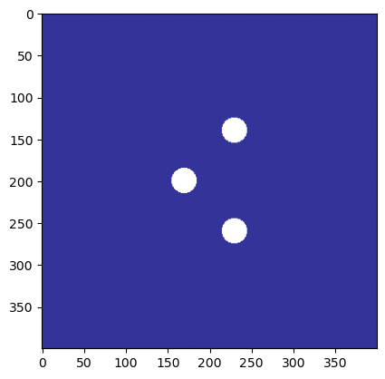

import os
os.environ["ZOOMY_AMREX_HOME"] = "/home/is086873/MBD/Git/amrex"Raising buoy
Raising buoy
Imports
Warning
You need to modify ZOOMY_AMREX_HOME below to point to your local AMReX installation This test case requires you to have cloned the ZoomyLab/zoomy-amrex subrepository git submodule update --init library/zoomy-amrex. This test case requires you to have cloned the ZoomyLab/data subrepository git submodule update --init data.
from pathlib import Path
import sys
import rasterio
import numpy as np
from sympy import Matrix
os.environ['ZoomyLog'] = 'Default'
os.environ['ZoomyLogLevel'] = 'INFO'
project_root = Path.cwd().parents[2] # 0=current, 1=.., 2=../..
sys.path.append(str(project_root))Load packages
import numpy as np
from sympy import Matrix, Identity
from zoomy_core.model.models.shallow_moments_topo import (
ShallowMomentsTopo,
NumericalShallowMomentsTopo,
)
from zoomy_core.model.custom_sympy_functions import conditional
from zoomy_core.fvm.symbolic_numerics import (
PositiveNonconservativeRusanov,
PositiveRusanov,
Rusanov
)
import zoomy_core.model.initial_conditions as IC
import zoomy_core.model.boundary_conditions as BC
from zoomy_core.misc.misc import Zstruct, ZArray, get_main_directory, Settings
import zoomy_core.transformation.to_amrex as trafo
from tutorials.amrex.helper import create_artificial_raster, show_raster, transform_tiffCreate raster data (initial conditions)
main_dir = get_main_directory()
dem_path = os.path.join(main_dir, 'data/topography_artificial.tif')
ic_water_path = os.path.join(main_dir, 'data/release_artificial.tif')
ic_friction_path = os.path.join(main_dir, 'data/friction_artificial.tif')
N = 100
dx = 1.
M = N * dx
dBuoy = 5
friction_strength = 10000
def spacial_surface_friction(x,y):
out = 0. * np.ones_like(x)
Xi = []
Di = []
for i in range(3):
for j in range(10):
Xi.append([i *20- 50, j * 20 -70 ])
Di.append([5])
for i, xi in enumerate(Xi):
r = np.sqrt((x-xi[0])**2 + (y-xi[1])**2)
out += np.where(r < Di[i], friction_strength * np.ones_like(x), 0.0 * np.ones_like(x))
return out
create_artificial_raster(lambda x, y: -0.0*np.exp((-(1 *(x+30)+0.5*M)**2- 0 * y**2)/M/1) + 5, (-M, M, -M, M), dx, ic_water_path)
create_artificial_raster(lambda x, y: 0 * np.exp(-(x+M)**2/M**2), (-M, M, -M, M), dx, dem_path)
create_artificial_raster(lambda x, y: spacial_surface_friction(x,y), (-M, M, -M, M), dx, ic_friction_path)
# show_raster(dem_path)
# show_raster(ic_water_path)
show_raster(ic_friction_path)
Model definition
import sympy as sp
f_h = lambda t:5 + 0.5 * sp.cos(2* 3.14 * t/4)
u_mean = 0.0
inflow_dict = {
1: lambda t, x, dx, q, qaux, p, n: f_h(t),
# 2: lambda t, x, dx, q, qaux, p, n: sp.sqrt(f_h(t) * 9.81) * q[1],
}
bcs = BC.BoundaryConditions(
[
BC.Extrapolation(tag="N"),
BC.Extrapolation(tag="S"),
BC.Lambda(tag="E", prescribe_fields=inflow_dict),
BC.Extrapolation(tag="W"),
]
)
class MyModel(NumericalShallowMomentsTopo):
def update_variables(self):
Q = self.variables
h = Q[1]
Qout = ZArray(Q)
h = conditional(h <= 0, 0, h)
Qout[1] = h
eps = self.parameters.eps
factor = h / (h + eps*100.)
for i in range(2, self.n_variables):
Qout[i] *= factor
return Qout
def update_aux_variables(self):
Q = self.variables
Qaux = ZArray(self.aux_variables)
eps = self.parameters.eps
Qaux[0] = Q[1] / (Q[1]**2 + eps)
return ZArray(Qaux)
def source(self):
out = Matrix([0 for i in range(self.n_variables)])
# out += self.newtonian()
# out += self.slip_mod()
# out += self.slip()
out += self.surface_friction()
return out
level = 1
model = MyModel(
level=level,
dimension=2,
boundary_conditions=bcs,
parameters=Zstruct(g=9.81, ez=1., nu=0.000001, lamda=1/1000., rho=1000, c_slipmod=1/30, C=300, eps=1e-6),
aux_variables = ['hinv', 'friction'],
)
class Numerics(PositiveRusanov):
def get_viscosity_identity_flux(self):
Id = Matrix(Identity(self.model.n_variables))
lvl = self.model.level
offset = lvl + 1
Id = 0 * Id
Id[1, 1] = 1
Id[2, 2] = 1
Id[2 + offset, 2 + offset] = 1
return ZArray(Id)
def get_viscosity_identity_fluctuations(self):
Id = Matrix(Identity(self.model.n_variables))
Id[0, 0] = 0
lvl = self.model.level
offset = lvl + 1
Id = 0 * Id
Id[1, 1] = 0
Id[2, 2] = 0
Id[2 + offset, 2 + offset] = 0
return ZArray(Id)
numerics = Numerics(model)Print the Model definition
print(model.parameters.keys())
print(model.parameter_values)['g', 'ez', 'nu', 'lamda', 'rho', 'c_slipmod', 'C', 'eps']
[9.81000000e+00 1.00000000e+00 1.00000000e-06 1.00000000e-03
1.00000000e+03 3.33333333e-02 3.00000000e+02 1.00000000e-06]Note that this is the numerical model, hence we explicitly use hinv instead of 1/h and apply regularization. Also note that in the numerical model, the eigenvalues are ‘truncated’ in the sense that we return 0 eigenvalues for try cells.
model.flux() + model.hydrostatic_pressure()\(\displaystyle \left[\begin{matrix}0 & 0\\hinv q_{1} q_{2} & hinv q_{1} q_{4}\\\frac{ez g q_{1}^{2}}{2} + hinv^{2} q_{1} q_{2}^{2} + \frac{hinv^{2} q_{1} q_{3}^{2}}{3} & hinv^{2} q_{1} q_{2} q_{4} + \frac{hinv^{2} q_{1} q_{3} q_{5}}{3}\\2 hinv^{2} q_{1} q_{2} q_{3} & hinv^{2} q_{1} q_{2} q_{5} + hinv^{2} q_{1} q_{3} q_{4}\\hinv^{2} q_{1} q_{2} q_{4} + \frac{hinv^{2} q_{1} q_{3} q_{5}}{3} & \frac{ez g q_{1}^{2}}{2} + hinv^{2} q_{1} q_{4}^{2} + \frac{hinv^{2} q_{1} q_{5}^{2}}{3}\\hinv^{2} q_{1} q_{2} q_{5} + hinv^{2} q_{1} q_{3} q_{4} & 2 hinv^{2} q_{1} q_{4} q_{5}\end{matrix}\right]\)
model.nonconservative_matrix()\(\displaystyle \left[\begin{matrix}\left[\begin{matrix}0 & 0\\0 & 0\\0 & 0\\0 & 0\\0 & 0\\0 & 0\end{matrix}\right] & \left[\begin{matrix}0 & 0\\0 & 0\\0 & 0\\0 & 0\\0 & 0\\0 & 0\end{matrix}\right] & \left[\begin{matrix}0 & 0\\0 & 0\\0 & 0\\0 & 0\\0 & 0\\0 & 0\end{matrix}\right] & \left[\begin{matrix}0 & 0\\0 & 0\\0 & 0\\- hinv q_{2} & 0\\0 & 0\\0 & - hinv q_{2}\end{matrix}\right] & \left[\begin{matrix}0 & 0\\0 & 0\\0 & 0\\0 & 0\\0 & 0\\0 & 0\end{matrix}\right] & \left[\begin{matrix}0 & 0\\0 & 0\\0 & 0\\- hinv q_{4} & 0\\0 & 0\\0 & - hinv q_{4}\end{matrix}\right]\end{matrix}\right]\)
model.source()\(\displaystyle \left[\begin{matrix}0\\0\\- \frac{2.0 friction \left(hinv q_{2} - 1.0 hinv q_{3}\right)}{\rho}\\\frac{6.0 friction \left(hinv q_{2} - 1.0 hinv q_{3}\right)}{\rho}\\- \frac{2.0 friction \left(hinv q_{4} - 1.0 hinv q_{5}\right)}{\rho}\\\frac{6.0 friction \left(hinv q_{4} - 1.0 hinv q_{5}\right)}{\rho}\end{matrix}\right]\)
model.eigenvalues()\(\displaystyle \left[\begin{matrix}\operatorname{conditional}{\left(q_{1} > eps,0,0 \right)} & \operatorname{conditional}{\left(q_{1} > eps,\frac{n_{0} q_{2} + n_{1} q_{4}}{q_{1}},0 \right)} & \operatorname{conditional}{\left(q_{1} > eps,\frac{n_{0} q_{2} + n_{1} q_{4} - \sqrt{ez g n_{0}^{2} q_{1}^{3} + ez g n_{1}^{2} q_{1}^{3} + n_{0}^{2} q_{3}^{2} + 2 n_{0} n_{1} q_{3} q_{5} + n_{1}^{2} q_{5}^{2}}}{q_{1}},0 \right)} & \operatorname{conditional}{\left(q_{1} > eps,\frac{n_{0} q_{2} + n_{1} q_{4} + \sqrt{ez g n_{0}^{2} q_{1}^{3} + ez g n_{1}^{2} q_{1}^{3} + n_{0}^{2} q_{3}^{2} + 2 n_{0} n_{1} q_{3} q_{5} + n_{1}^{2} q_{5}^{2}}}{q_{1}},0 \right)} & \operatorname{conditional}{\left(q_{1} > eps,\frac{n_{0} q_{2} - \frac{\sqrt{3} n_{0} q_{3}}{3} + n_{1} q_{4} - \frac{\sqrt{3} n_{1} q_{5}}{3}}{q_{1}},0 \right)} & \operatorname{conditional}{\left(q_{1} > eps,\frac{n_{0} q_{2} + \frac{\sqrt{3} n_{0} q_{3}}{3} + n_{1} q_{4} + \frac{\sqrt{3} n_{1} q_{5}}{3}}{q_{1}},0 \right)}\end{matrix}\right]\)
Code transformation and AMReX compilation
if you want to “clean” and compile from scratch, Comment in “make clean” two cells below.
import shutil
from pathlib import Path
settings = Settings(name="ShallowMoments", output=Zstruct(directory=f"outputs/amrex_{level}"))
source_dir = Path(os.path.join(main_dir, 'library/zoomy_amrex/Exec'))
output_dir = Path(os.path.join(main_dir, settings.output.directory))
if os.path.exists(output_dir):
shutil.rmtree(output_dir)
trafo.AmrexModel.write_code(model, settings)
trafo.AmrexNumerics.write_code(numerics, settings)
# trafo.write_code(model, settings)
main_dir = get_main_directory()
os.environ['ZOOMY_AMREX_MODEL'] = os.path.join(main_dir, os.path.join(settings.output.directory, '.c_interface'))2026-03-09 16:39:25.488 | WARNING | zoomy_core.misc.misc:__init__:391 - No 'filename' attribute found in Settings.output Zstruct. Default: 'simulation' 2026-03-09 16:39:25.489 | WARNING | zoomy_core.misc.misc:__init__:391 - No 'clean_directory' attribute found in Settings.output Zstruct. Default: 'False' 2026-03-09 16:39:25.489 | WARNING | zoomy_core.misc.misc:__init__:391 - No 'snapshots' attribute found in Settings.output Zstruct. Default: '2'
What have we gained?
- A C++ file containing the translation of our symbolical PDE model
- A C++ file containing the translatoin of our numerical Riemann solver, including Wet-dry front treatment.
Let’s have a look at the code now!
Model.H
main_dir = get_main_directory()
path = os.path.join(main_dir, os.path.join(settings.output.directory, '.amrex_interface/Model.H'))
with open(path, "r") as f:
print(f.read())#pragma once
#include <AMReX_Array4.H>
#include <AMReX_Vector.H>
#include <AMReX_SmallMatrix.H>
#include <vector>
#include <string>
#include <algorithm>
#ifdef __CUDACC__
#define PORTABLE_FN __host__ __device__
#else
#define PORTABLE_FN
#endif
struct Model {
using T = amrex::Real;
static constexpr int n_dof_q = 6;
static constexpr int n_dof_qaux = 2;
static constexpr int n_parameters = 8;
static constexpr int dimension = 2;
static constexpr int n_boundary_tags = 4;
static const std::vector<std::string> get_boundary_tags() { return { "E", "N", "S", "W" }; }
static const std::vector<std::string> parameter_names() { return { "g", "ez", "nu", "lamda", "rho", "c_slipmod", "C", "eps" }; }
static const std::vector<T> default_parameters() { return { 9.81, 1.0, 1e-06, 0.001, 1000.0, 0.03333333333333333, 300.0, 1e-06 }; }
AMREX_GPU_HOST_DEVICE AMREX_FORCE_INLINE
static amrex::SmallMatrix<amrex::Real,12,1> flux(
amrex::SmallMatrix<amrex::Real,6,1> const& Q,
amrex::SmallMatrix<amrex::Real,2,1> const& Qaux,
amrex::SmallMatrix<amrex::Real,8,1> const& p) noexcept
{
amrex::Real t0 = Qaux(0, 0)*Q(1, 0);
amrex::Real t1 = amrex::Math::powi<2>(Qaux(0, 0))*Q(1, 0);
amrex::Real t2 = (1.0/3.0)*t1;
amrex::Real t3 = Q(2, 0)*t1;
amrex::Real t4 = Q(3, 0)*Q(5, 0)*t2 + Q(4, 0)*t3;
amrex::Real t5 = Q(4, 0)*t1;
amrex::Real t6 = Q(3, 0)*t5 + Q(5, 0)*t3;
amrex::SmallMatrix<amrex::Real,12,1> res;
res(0, 0) = 0;
res(1, 0) = 0;
res(2, 0) = Q(2, 0)*t0;
res(3, 0) = Q(4, 0)*t0;
res(4, 0) = amrex::Math::powi<2>(Q(2, 0))*t1 + amrex::Math::powi<2>(Q(3, 0))*t2;
res(5, 0) = t4;
res(6, 0) = 2*Q(3, 0)*t3;
res(7, 0) = t6;
res(8, 0) = t4;
res(9, 0) = amrex::Math::powi<2>(Q(4, 0))*t1 + amrex::Math::powi<2>(Q(5, 0))*t2;
res(10, 0) = t6;
res(11, 0) = 2*Q(5, 0)*t5;
return res;
}
AMREX_GPU_HOST_DEVICE AMREX_FORCE_INLINE
static amrex::SmallMatrix<amrex::Real,12,1> dflux(
amrex::SmallMatrix<amrex::Real,6,1> const& Q,
amrex::SmallMatrix<amrex::Real,2,1> const& Qaux,
amrex::SmallMatrix<amrex::Real,8,1> const& p) noexcept
{
amrex::SmallMatrix<amrex::Real,12,1> res;
res(0, 0) = 0;
res(1, 0) = 0;
res(2, 0) = 0;
res(3, 0) = 0;
res(4, 0) = 0;
res(5, 0) = 0;
res(6, 0) = 0;
res(7, 0) = 0;
res(8, 0) = 0;
res(9, 0) = 0;
res(10, 0) = 0;
res(11, 0) = 0;
return res;
}
AMREX_GPU_HOST_DEVICE AMREX_FORCE_INLINE
static amrex::SmallMatrix<amrex::Real,12,1> hydrostatic_pressure(
amrex::SmallMatrix<amrex::Real,6,1> const& Q,
amrex::SmallMatrix<amrex::Real,2,1> const& Qaux,
amrex::SmallMatrix<amrex::Real,8,1> const& p) noexcept
{
amrex::Real t0 = (1.0/2.0)*p(1, 0)*p(0, 0)*amrex::Math::powi<2>(Q(1, 0));
amrex::SmallMatrix<amrex::Real,12,1> res;
res(0, 0) = 0;
res(1, 0) = 0;
res(2, 0) = 0;
res(3, 0) = 0;
res(4, 0) = t0;
res(5, 0) = 0;
res(6, 0) = 0;
res(7, 0) = 0;
res(8, 0) = 0;
res(9, 0) = t0;
res(10, 0) = 0;
res(11, 0) = 0;
return res;
}
AMREX_GPU_HOST_DEVICE AMREX_FORCE_INLINE
static amrex::SmallMatrix<amrex::Real,72,1> nonconservative_matrix(
amrex::SmallMatrix<amrex::Real,6,1> const& Q,
amrex::SmallMatrix<amrex::Real,2,1> const& Qaux,
amrex::SmallMatrix<amrex::Real,8,1> const& p) noexcept
{
amrex::Real t0 = -Qaux(0, 0)*Q(2, 0);
amrex::Real t1 = -Qaux(0, 0)*Q(4, 0);
amrex::SmallMatrix<amrex::Real,72,1> res;
res(0, 0) = 0;
res(1, 0) = 0;
res(2, 0) = 0;
res(3, 0) = 0;
res(4, 0) = 0;
res(5, 0) = 0;
res(6, 0) = 0;
res(7, 0) = 0;
res(8, 0) = 0;
res(9, 0) = 0;
res(10, 0) = 0;
res(11, 0) = 0;
res(12, 0) = 0;
res(13, 0) = 0;
res(14, 0) = 0;
res(15, 0) = 0;
res(16, 0) = 0;
res(17, 0) = 0;
res(18, 0) = 0;
res(19, 0) = 0;
res(20, 0) = 0;
res(21, 0) = 0;
res(22, 0) = 0;
res(23, 0) = 0;
res(24, 0) = 0;
res(25, 0) = 0;
res(26, 0) = 0;
res(27, 0) = 0;
res(28, 0) = 0;
res(29, 0) = 0;
res(30, 0) = 0;
res(31, 0) = 0;
res(32, 0) = 0;
res(33, 0) = 0;
res(34, 0) = 0;
res(35, 0) = 0;
res(36, 0) = 0;
res(37, 0) = 0;
res(38, 0) = 0;
res(39, 0) = 0;
res(40, 0) = 0;
res(41, 0) = 0;
res(42, 0) = t0;
res(43, 0) = 0;
res(44, 0) = 0;
res(45, 0) = 0;
res(46, 0) = 0;
res(47, 0) = t0;
res(48, 0) = 0;
res(49, 0) = 0;
res(50, 0) = 0;
res(51, 0) = 0;
res(52, 0) = 0;
res(53, 0) = 0;
res(54, 0) = 0;
res(55, 0) = 0;
res(56, 0) = 0;
res(57, 0) = 0;
res(58, 0) = 0;
res(59, 0) = 0;
res(60, 0) = 0;
res(61, 0) = 0;
res(62, 0) = 0;
res(63, 0) = 0;
res(64, 0) = 0;
res(65, 0) = 0;
res(66, 0) = t1;
res(67, 0) = 0;
res(68, 0) = 0;
res(69, 0) = 0;
res(70, 0) = 0;
res(71, 0) = t1;
return res;
}
AMREX_GPU_HOST_DEVICE AMREX_FORCE_INLINE
static amrex::SmallMatrix<amrex::Real,72,1> quasilinear_matrix(
amrex::SmallMatrix<amrex::Real,6,1> const& Q,
amrex::SmallMatrix<amrex::Real,2,1> const& Qaux,
amrex::SmallMatrix<amrex::Real,8,1> const& p) noexcept
{
amrex::Real t0 = Qaux(0, 0)*Q(2, 0);
amrex::Real t1 = Qaux(0, 0)*Q(4, 0);
amrex::Real t2 = Qaux(0, 0)*Q(1, 0);
amrex::Real t3 = p(1, 0)*p(0, 0)*Q(1, 0);
amrex::Real t4 = amrex::Math::powi<2>(Qaux(0, 0));
amrex::Real t5 = (1.0/3.0)*t4;
amrex::Real t6 = Q(4, 0)*t4;
amrex::Real t7 = Q(5, 0)*t5;
amrex::Real t8 = Q(2, 0)*t6 + Q(3, 0)*t7;
amrex::Real t9 = Q(2, 0)*t4;
amrex::Real t10 = Q(1, 0)*t9;
amrex::Real t11 = 2*t10;
amrex::Real t12 = Q(1, 0)*t6;
amrex::Real t13 = Q(1, 0)*t4;
amrex::Real t14 = Q(3, 0)*t13;
amrex::Real t15 = Q(1, 0)*t7;
amrex::Real t16 = Q(1, 0)*Q(3, 0)*t5;
amrex::Real t17 = Q(3, 0)*t6 + Q(5, 0)*t9;
amrex::Real t18 = Q(5, 0)*t13;
amrex::Real t19 = -t0;
amrex::Real t20 = 2*t12;
amrex::Real t21 = -t1;
amrex::SmallMatrix<amrex::Real,72,1> res;
res(0, 0) = 0;
res(1, 0) = 0;
res(2, 0) = 0;
res(3, 0) = 0;
res(4, 0) = 0;
res(5, 0) = 0;
res(6, 0) = 0;
res(7, 0) = 0;
res(8, 0) = 0;
res(9, 0) = 0;
res(10, 0) = 0;
res(11, 0) = 0;
res(12, 0) = 0;
res(13, 0) = 0;
res(14, 0) = t0;
res(15, 0) = t1;
res(16, 0) = t2;
res(17, 0) = 0;
res(18, 0) = 0;
res(19, 0) = 0;
res(20, 0) = 0;
res(21, 0) = t2;
res(22, 0) = 0;
res(23, 0) = 0;
res(24, 0) = 0;
res(25, 0) = 0;
res(26, 0) = amrex::Math::powi<2>(Q(2, 0))*t4 + amrex::Math::powi<2>(Q(3, 0))*t5 + t3;
res(27, 0) = t8;
res(28, 0) = t11;
res(29, 0) = t12;
res(30, 0) = (2.0/3.0)*t14;
res(31, 0) = t15;
res(32, 0) = 0;
res(33, 0) = t10;
res(34, 0) = 0;
res(35, 0) = t16;
res(36, 0) = 0;
res(37, 0) = 0;
res(38, 0) = 2*Q(3, 0)*t9;
res(39, 0) = t17;
res(40, 0) = 2*t14;
res(41, 0) = t18;
res(42, 0) = t11 + t19;
res(43, 0) = t12;
res(44, 0) = 0;
res(45, 0) = t14;
res(46, 0) = 0;
res(47, 0) = t10 + t19;
res(48, 0) = 0;
res(49, 0) = 0;
res(50, 0) = t8;
res(51, 0) = amrex::Math::powi<2>(Q(4, 0))*t4 + amrex::Math::powi<2>(Q(5, 0))*t5 + t3;
res(52, 0) = t12;
res(53, 0) = 0;
res(54, 0) = t15;
res(55, 0) = 0;
res(56, 0) = t10;
res(57, 0) = t20;
res(58, 0) = t16;
res(59, 0) = (2.0/3.0)*t18;
res(60, 0) = 0;
res(61, 0) = 0;
res(62, 0) = t17;
res(63, 0) = 2*Q(5, 0)*t6;
res(64, 0) = t18;
res(65, 0) = 0;
res(66, 0) = t12 + t21;
res(67, 0) = 0;
res(68, 0) = t14;
res(69, 0) = 2*t18;
res(70, 0) = t10;
res(71, 0) = t20 + t21;
return res;
}
AMREX_GPU_HOST_DEVICE AMREX_FORCE_INLINE
static amrex::SmallMatrix<amrex::Real,6,1> eigenvalues(
amrex::SmallMatrix<amrex::Real,6,1> const& Q,
amrex::SmallMatrix<amrex::Real,2,1> const& Qaux,
amrex::SmallMatrix<amrex::Real,8,1> const& p,
amrex::SmallMatrix<amrex::Real,2,1> const& n) noexcept
{
amrex::Real t0 = Q(1, 0) > p(7, 0);
amrex::Real t1 = (1.0 / amrex::Math::powi<1>(Q(1, 0)));
amrex::Real t2 = n(0, 0)*Q(2, 0) + n(1, 0)*Q(4, 0);
amrex::Real t3 = n(0, 0)*Q(3, 0);
amrex::Real t4 = n(1, 0)*Q(5, 0);
amrex::Real t5 = amrex::Math::powi<2>(n(0, 0));
amrex::Real t6 = amrex::Math::powi<2>(n(1, 0));
amrex::Real t7 = p(1, 0)*p(0, 0)*amrex::Math::powi<3>(Q(1, 0));
amrex::Real t8 = std::pow(amrex::Math::powi<2>(Q(3, 0))*t5 + amrex::Math::powi<2>(Q(5, 0))*t6 + 2*t3*t4 + t5*t7 + t6*t7, 1.0/2.0);
amrex::Real t9 = (1.0/3.0)*std::pow(3, 1.0/2.0);
amrex::Real t10 = t3*t9;
amrex::Real t11 = t4*t9;
amrex::SmallMatrix<amrex::Real,6,1> res;
res(0, 0) = ((t0) ? (0) : (0));
res(1, 0) = ((t0) ? (t1*t2) : (0));
res(2, 0) = ((t0) ? (t1*(t2 - t8)) : (0));
res(3, 0) = ((t0) ? (t1*(t2 + t8)) : (0));
res(4, 0) = ((t0) ? (t1*(-t10 - t11 + t2)) : (0));
res(5, 0) = ((t0) ? (t1*(t10 + t11 + t2)) : (0));
return res;
}
AMREX_GPU_HOST_DEVICE AMREX_FORCE_INLINE
static amrex::SmallMatrix<amrex::Real,36,1> left_eigenvectors(
amrex::SmallMatrix<amrex::Real,6,1> const& Q,
amrex::SmallMatrix<amrex::Real,2,1> const& Qaux,
amrex::SmallMatrix<amrex::Real,8,1> const& p,
amrex::SmallMatrix<amrex::Real,2,1> const& n) noexcept
{
amrex::SmallMatrix<amrex::Real,36,1> res;
res(0, 0) = 0;
res(1, 0) = 0;
res(2, 0) = 0;
res(3, 0) = 0;
res(4, 0) = 0;
res(5, 0) = 0;
res(6, 0) = 0;
res(7, 0) = 0;
res(8, 0) = 0;
res(9, 0) = 0;
res(10, 0) = 0;
res(11, 0) = 0;
res(12, 0) = 0;
res(13, 0) = 0;
res(14, 0) = 0;
res(15, 0) = 0;
res(16, 0) = 0;
res(17, 0) = 0;
res(18, 0) = 0;
res(19, 0) = 0;
res(20, 0) = 0;
res(21, 0) = 0;
res(22, 0) = 0;
res(23, 0) = 0;
res(24, 0) = 0;
res(25, 0) = 0;
res(26, 0) = 0;
res(27, 0) = 0;
res(28, 0) = 0;
res(29, 0) = 0;
res(30, 0) = 0;
res(31, 0) = 0;
res(32, 0) = 0;
res(33, 0) = 0;
res(34, 0) = 0;
res(35, 0) = 0;
return res;
}
AMREX_GPU_HOST_DEVICE AMREX_FORCE_INLINE
static amrex::SmallMatrix<amrex::Real,36,1> right_eigenvectors(
amrex::SmallMatrix<amrex::Real,6,1> const& Q,
amrex::SmallMatrix<amrex::Real,2,1> const& Qaux,
amrex::SmallMatrix<amrex::Real,8,1> const& p,
amrex::SmallMatrix<amrex::Real,2,1> const& n) noexcept
{
amrex::SmallMatrix<amrex::Real,36,1> res;
res(0, 0) = 0;
res(1, 0) = 0;
res(2, 0) = 0;
res(3, 0) = 0;
res(4, 0) = 0;
res(5, 0) = 0;
res(6, 0) = 0;
res(7, 0) = 0;
res(8, 0) = 0;
res(9, 0) = 0;
res(10, 0) = 0;
res(11, 0) = 0;
res(12, 0) = 0;
res(13, 0) = 0;
res(14, 0) = 0;
res(15, 0) = 0;
res(16, 0) = 0;
res(17, 0) = 0;
res(18, 0) = 0;
res(19, 0) = 0;
res(20, 0) = 0;
res(21, 0) = 0;
res(22, 0) = 0;
res(23, 0) = 0;
res(24, 0) = 0;
res(25, 0) = 0;
res(26, 0) = 0;
res(27, 0) = 0;
res(28, 0) = 0;
res(29, 0) = 0;
res(30, 0) = 0;
res(31, 0) = 0;
res(32, 0) = 0;
res(33, 0) = 0;
res(34, 0) = 0;
res(35, 0) = 0;
return res;
}
AMREX_GPU_HOST_DEVICE AMREX_FORCE_INLINE
static amrex::SmallMatrix<amrex::Real,6,1> source(
amrex::SmallMatrix<amrex::Real,6,1> const& Q,
amrex::SmallMatrix<amrex::Real,2,1> const& Qaux,
amrex::SmallMatrix<amrex::Real,8,1> const& p) noexcept
{
amrex::Real t0 = 1.0*Qaux(0, 0);
amrex::Real t1 = Qaux(1, 0)/p(4, 0);
amrex::Real t2 = t1*(Qaux(0, 0)*Q(2, 0) - Q(3, 0)*t0);
amrex::Real t3 = t1*(Qaux(0, 0)*Q(4, 0) - Q(5, 0)*t0);
amrex::SmallMatrix<amrex::Real,6,1> res;
res(0, 0) = 0;
res(1, 0) = 0;
res(2, 0) = -2.0*t2;
res(3, 0) = 6.0*t2;
res(4, 0) = -2.0*t3;
res(5, 0) = 6.0*t3;
return res;
}
AMREX_GPU_HOST_DEVICE AMREX_FORCE_INLINE
static amrex::SmallMatrix<amrex::Real,36,1> source_jacobian_wrt_variables(
amrex::SmallMatrix<amrex::Real,6,1> const& Q,
amrex::SmallMatrix<amrex::Real,2,1> const& Qaux,
amrex::SmallMatrix<amrex::Real,8,1> const& p) noexcept
{
amrex::Real t0 = Qaux(1, 0)*Qaux(0, 0)/p(4, 0);
amrex::Real t1 = 2.0*t0;
amrex::Real t2 = -t1;
amrex::Real t3 = 6.0*t0;
amrex::Real t4 = -t3;
amrex::SmallMatrix<amrex::Real,36,1> res;
res(0, 0) = 0;
res(1, 0) = 0;
res(2, 0) = 0;
res(3, 0) = 0;
res(4, 0) = 0;
res(5, 0) = 0;
res(6, 0) = 0;
res(7, 0) = 0;
res(8, 0) = 0;
res(9, 0) = 0;
res(10, 0) = 0;
res(11, 0) = 0;
res(12, 0) = 0;
res(13, 0) = 0;
res(14, 0) = t2;
res(15, 0) = t3;
res(16, 0) = 0;
res(17, 0) = 0;
res(18, 0) = 0;
res(19, 0) = 0;
res(20, 0) = t1;
res(21, 0) = t4;
res(22, 0) = 0;
res(23, 0) = 0;
res(24, 0) = 0;
res(25, 0) = 0;
res(26, 0) = 0;
res(27, 0) = 0;
res(28, 0) = t2;
res(29, 0) = t3;
res(30, 0) = 0;
res(31, 0) = 0;
res(32, 0) = 0;
res(33, 0) = 0;
res(34, 0) = t1;
res(35, 0) = t4;
return res;
}
AMREX_GPU_HOST_DEVICE AMREX_FORCE_INLINE
static amrex::SmallMatrix<amrex::Real,12,1> source_jacobian_wrt_aux_variables(
amrex::SmallMatrix<amrex::Real,6,1> const& Q,
amrex::SmallMatrix<amrex::Real,2,1> const& Qaux,
amrex::SmallMatrix<amrex::Real,8,1> const& p) noexcept
{
amrex::Real t0 = (1.0 / amrex::Math::powi<1>(p(4, 0)));
amrex::Real t1 = Qaux(1, 0)*t0;
amrex::Real t2 = t1*(Q(2, 0) - 1.0*Q(3, 0));
amrex::Real t3 = t1*(Q(4, 0) - 1.0*Q(5, 0));
amrex::Real t4 = 2.0*Qaux(0, 0);
amrex::Real t5 = 6.0*Qaux(0, 0);
amrex::SmallMatrix<amrex::Real,12,1> res;
res(0, 0) = 0;
res(1, 0) = 0;
res(2, 0) = -2.0*t2;
res(3, 0) = 6.0*t2;
res(4, 0) = -2.0*t3;
res(5, 0) = 6.0*t3;
res(6, 0) = 0;
res(7, 0) = 0;
res(8, 0) = t0*(2.0*Qaux(0, 0)*Q(3, 0) - Q(2, 0)*t4);
res(9, 0) = t0*(Q(2, 0)*t5 - Q(3, 0)*t5);
res(10, 0) = t0*(2.0*Qaux(0, 0)*Q(5, 0) - Q(4, 0)*t4);
res(11, 0) = t0*(Q(4, 0)*t5 - Q(5, 0)*t5);
return res;
}
AMREX_GPU_HOST_DEVICE AMREX_FORCE_INLINE
static amrex::SmallMatrix<amrex::Real,6,1> project_2d_to_3d(
amrex::SmallMatrix<amrex::Real,3,1> const& X,
amrex::SmallMatrix<amrex::Real,6,1> const& Q,
amrex::SmallMatrix<amrex::Real,2,1> const& Qaux,
amrex::SmallMatrix<amrex::Real,8,1> const& p) noexcept
{
amrex::Real t0 = Qaux(0, 0)*(1 - 2*X(2, 0));
amrex::SmallMatrix<amrex::Real,6,1> res;
res(0, 0) = Q(0, 0);
res(1, 0) = Q(1, 0);
res(2, 0) = Qaux(0, 0)*Q(2, 0) + Q(3, 0)*t0;
res(3, 0) = Qaux(0, 0)*Q(4, 0) + Q(5, 0)*t0;
res(4, 0) = 0;
res(5, 0) = 9810.0*Q(1, 0)*(1 - X(2, 0));
return res;
}
AMREX_GPU_HOST_DEVICE AMREX_FORCE_INLINE
static amrex::SmallMatrix<amrex::Real,6,1> project_3d_to_2d(
amrex::SmallMatrix<amrex::Real,6,1> const& Q,
amrex::SmallMatrix<amrex::Real,2,1> const& Qaux,
amrex::SmallMatrix<amrex::Real,8,1> const& p) noexcept
{
amrex::SmallMatrix<amrex::Real,6,1> res;
res(0, 0) = 0;
res(1, 0) = 0;
res(2, 0) = 0;
res(3, 0) = 0;
res(4, 0) = 0;
res(5, 0) = 0;
return res;
}
AMREX_GPU_HOST_DEVICE AMREX_FORCE_INLINE
static amrex::SmallMatrix<amrex::Real,6,1> residual(
amrex::Real const time,
amrex::SmallMatrix<amrex::Real,3,1> const& X,
amrex::Real const dX,
amrex::SmallMatrix<amrex::Real,6,1> const& Q,
amrex::SmallMatrix<amrex::Real,2,1> const& Qaux,
amrex::SmallMatrix<amrex::Real,8,1> const& p) noexcept
{
amrex::SmallMatrix<amrex::Real,6,1> res;
res(0, 0) = 0;
res(1, 0) = 0;
res(2, 0) = 0;
res(3, 0) = 0;
res(4, 0) = 0;
res(5, 0) = 0;
return res;
}
AMREX_GPU_HOST_DEVICE AMREX_FORCE_INLINE
static amrex::SmallMatrix<amrex::Real,6,1> interpolate(
amrex::SmallMatrix<amrex::Real,6,1> const& Q,
amrex::SmallMatrix<amrex::Real,2,1> const& Qaux,
amrex::SmallMatrix<amrex::Real,8,1> const& p) noexcept
{
amrex::SmallMatrix<amrex::Real,6,1> res;
res(0, 0) = Q(0, 0);
res(1, 0) = Q(1, 0);
res(2, 0) = Q(2, 0);
res(3, 0) = Q(3, 0);
res(4, 0) = Q(4, 0);
res(5, 0) = Q(5, 0);
return res;
}
AMREX_GPU_HOST_DEVICE AMREX_FORCE_INLINE
static amrex::SmallMatrix<amrex::Real,6,1> initial_condition(
amrex::SmallMatrix<amrex::Real,3,1> const& X,
amrex::SmallMatrix<amrex::Real,8,1> const& p) noexcept
{
amrex::SmallMatrix<amrex::Real,6,1> res;
res(0, 0) = 0;
res(1, 0) = 0;
res(2, 0) = 0;
res(3, 0) = 0;
res(4, 0) = 0;
res(5, 0) = 0;
return res;
}
AMREX_GPU_HOST_DEVICE AMREX_FORCE_INLINE
static amrex::SmallMatrix<amrex::Real,2,1> initial_aux_condition(
amrex::SmallMatrix<amrex::Real,3,1> const& X,
amrex::SmallMatrix<amrex::Real,8,1> const& p) noexcept
{
amrex::SmallMatrix<amrex::Real,2,1> res;
res(0, 0) = 0;
res(1, 0) = 0;
return res;
}
AMREX_GPU_HOST_DEVICE AMREX_FORCE_INLINE
static amrex::SmallMatrix<amrex::Real,6,1> update_variables(
amrex::SmallMatrix<amrex::Real,6,1> const& Q,
amrex::SmallMatrix<amrex::Real,2,1> const& Qaux,
amrex::SmallMatrix<amrex::Real,8,1> const& p) noexcept
{
amrex::Real t0 = ((false) ? (0) : (Q(1, 0)));
amrex::Real t1 = t0/(100.0*p(7, 0) + t0);
amrex::SmallMatrix<amrex::Real,6,1> res;
res(0, 0) = Q(0, 0);
res(1, 0) = t0;
res(2, 0) = Q(2, 0)*t1;
res(3, 0) = Q(3, 0)*t1;
res(4, 0) = Q(4, 0)*t1;
res(5, 0) = Q(5, 0)*t1;
return res;
}
AMREX_GPU_HOST_DEVICE AMREX_FORCE_INLINE
static amrex::SmallMatrix<amrex::Real,2,1> update_aux_variables(
amrex::SmallMatrix<amrex::Real,6,1> const& Q,
amrex::SmallMatrix<amrex::Real,2,1> const& Qaux,
amrex::SmallMatrix<amrex::Real,8,1> const& p) noexcept
{
amrex::SmallMatrix<amrex::Real,2,1> res;
res(0, 0) = Q(1, 0)/(p(7, 0) + amrex::Math::powi<2>(Q(1, 0)));
res(1, 0) = Qaux(1, 0);
return res;
}
AMREX_GPU_HOST_DEVICE AMREX_FORCE_INLINE
static amrex::SmallMatrix<amrex::Real,36,1> update_variables_jacobian_wrt_variables(
amrex::SmallMatrix<amrex::Real,6,1> const& Q,
amrex::SmallMatrix<amrex::Real,2,1> const& Qaux,
amrex::SmallMatrix<amrex::Real,8,1> const& p) noexcept
{
amrex::Real t0 = ((false) ? (0) : (1));
amrex::Real t1 = ((false) ? (0) : (Q(1, 0)));
amrex::Real t2 = 100.0*p(7, 0) + t1;
amrex::Real t3 = (1.0 / amrex::Math::powi<1>(t2));
amrex::Real t4 = t0*t3;
amrex::Real t5 = t0*t1/amrex::Math::powi<2>(t2);
amrex::Real t6 = t1*t3;
amrex::SmallMatrix<amrex::Real,36,1> res;
res(0, 0) = 1;
res(1, 0) = 0;
res(2, 0) = 0;
res(3, 0) = 0;
res(4, 0) = 0;
res(5, 0) = 0;
res(6, 0) = 0;
res(7, 0) = t0;
res(8, 0) = Q(2, 0)*t4 - Q(2, 0)*t5;
res(9, 0) = Q(3, 0)*t4 - Q(3, 0)*t5;
res(10, 0) = Q(4, 0)*t4 - Q(4, 0)*t5;
res(11, 0) = Q(5, 0)*t4 - Q(5, 0)*t5;
res(12, 0) = 0;
res(13, 0) = 0;
res(14, 0) = t6;
res(15, 0) = 0;
res(16, 0) = 0;
res(17, 0) = 0;
res(18, 0) = 0;
res(19, 0) = 0;
res(20, 0) = 0;
res(21, 0) = t6;
res(22, 0) = 0;
res(23, 0) = 0;
res(24, 0) = 0;
res(25, 0) = 0;
res(26, 0) = 0;
res(27, 0) = 0;
res(28, 0) = t6;
res(29, 0) = 0;
res(30, 0) = 0;
res(31, 0) = 0;
res(32, 0) = 0;
res(33, 0) = 0;
res(34, 0) = 0;
res(35, 0) = t6;
return res;
}
AMREX_GPU_HOST_DEVICE AMREX_FORCE_INLINE
static amrex::SmallMatrix<amrex::Real,12,1> update_aux_variables_jacobian_wrt_variables(
amrex::SmallMatrix<amrex::Real,6,1> const& Q,
amrex::SmallMatrix<amrex::Real,2,1> const& Qaux,
amrex::SmallMatrix<amrex::Real,8,1> const& p) noexcept
{
amrex::Real t0 = amrex::Math::powi<2>(Q(1, 0));
amrex::Real t1 = p(7, 0) + t0;
amrex::SmallMatrix<amrex::Real,12,1> res;
res(0, 0) = 0;
res(1, 0) = 0;
res(2, 0) = -2*t0/amrex::Math::powi<2>(t1) + (1.0 / amrex::Math::powi<1>(t1));
res(3, 0) = 0;
res(4, 0) = 0;
res(5, 0) = 0;
res(6, 0) = 0;
res(7, 0) = 0;
res(8, 0) = 0;
res(9, 0) = 0;
res(10, 0) = 0;
res(11, 0) = 0;
return res;
}
AMREX_GPU_HOST_DEVICE AMREX_FORCE_INLINE
static amrex::SmallMatrix<amrex::Real,6,1> boundary_conditions(
const int bc_idx,
amrex::SmallMatrix<amrex::Real,6,1> const& Q,
amrex::SmallMatrix<amrex::Real,2,1> const& Qaux,
amrex::SmallMatrix<amrex::Real,2,1> const& n,
amrex::SmallMatrix<amrex::Real,3,1> const& X,
amrex::Real const time,
amrex::Real const dX) noexcept
{
if (bc_idx == 0) {
amrex::SmallMatrix<amrex::Real,6,1> res;
res(0, 0) = Q(0, 0);
res(1, 0) = 0.5*std::cos(1.5700000000000001*time) + 5;
res(2, 0) = Q(2, 0);
res(3, 0) = Q(3, 0);
res(4, 0) = Q(4, 0);
res(5, 0) = Q(5, 0);
return res;
} else if (bc_idx == 1 || bc_idx == 2 || bc_idx == 3) {
amrex::SmallMatrix<amrex::Real,6,1> res;
res(0, 0) = Q(0, 0);
res(1, 0) = Q(1, 0);
res(2, 0) = Q(2, 0);
res(3, 0) = Q(3, 0);
res(4, 0) = Q(4, 0);
res(5, 0) = Q(5, 0);
return res;
}
amrex::SmallMatrix<amrex::Real,6,1> default_res{};
return default_res;
}
AMREX_GPU_HOST_DEVICE AMREX_FORCE_INLINE
static amrex::SmallMatrix<amrex::Real,2,1> aux_boundary_conditions(
const int bc_idx,
amrex::SmallMatrix<amrex::Real,6,1> const& Q,
amrex::SmallMatrix<amrex::Real,2,1> const& Qaux,
amrex::SmallMatrix<amrex::Real,2,1> const& n,
amrex::SmallMatrix<amrex::Real,3,1> const& X,
amrex::Real const time,
amrex::Real const dX) noexcept
{
if (bc_idx == 0 || bc_idx == 1 || bc_idx == 2 || bc_idx == 3) {
amrex::SmallMatrix<amrex::Real,2,1> res;
res(0, 0) = Qaux(0, 0);
res(1, 0) = Qaux(1, 0);
return res;
}
amrex::SmallMatrix<amrex::Real,2,1> default_res{};
return default_res;
}
};
Numerics.H
main_dir = get_main_directory()
path = os.path.join(main_dir, os.path.join(settings.output.directory, '.amrex_interface/Numerics.H'))
with open(path, "r") as f:
print(f.read())#pragma once
#include <AMReX_Array4.H>
#include <AMReX_Vector.H>
#include <AMReX_SmallMatrix.H>
#include "Model.H"
#include <vector>
#include <algorithm>
#ifdef __CUDACC__
#define PORTABLE_FN __host__ __device__
#else
#define PORTABLE_FN
#endif
struct Numerics {
using T = amrex::Real;
static constexpr int n_dof_q = 6;
AMREX_GPU_HOST_DEVICE AMREX_FORCE_INLINE
static amrex::SmallMatrix<amrex::Real,6,1> numerical_flux(
amrex::SmallMatrix<amrex::Real,6,1> const& Q_minus,
amrex::SmallMatrix<amrex::Real,6,1> const& Q_plus,
amrex::SmallMatrix<amrex::Real,2,1> const& Qaux_minus,
amrex::SmallMatrix<amrex::Real,2,1> const& Qaux_plus,
amrex::SmallMatrix<amrex::Real,8,1> const& p,
amrex::SmallMatrix<amrex::Real,2,1> const& n) noexcept
{
amrex::Real t0 = amrex::max(Q_minus(0, 0), Q_plus(0, 0));
amrex::Real t1 = -t0;
amrex::Real t2 = amrex::max(0.0, Q_minus(0, 0) + Q_minus(1, 0) + t1);
amrex::Real t3 = t2/amrex::max(Q_minus(1, 0), p(7, 0));
amrex::Real t4 = amrex::max(0.0, Q_plus(0, 0) + Q_plus(1, 0) + t1);
amrex::Real t5 = t4/amrex::max(Q_plus(1, 0), p(7, 0));
amrex::SmallMatrix<amrex::Real,6,1> v_arg_0{};
v_arg_0(0, 0) = t0;
v_arg_0(1, 0) = t2;
v_arg_0(2, 0) = Q_minus(2, 0)*t3;
v_arg_0(3, 0) = Q_minus(3, 0)*t3;
v_arg_0(4, 0) = Q_minus(4, 0)*t3;
v_arg_0(5, 0) = Q_minus(5, 0)*t3;
amrex::SmallMatrix<amrex::Real,2,1> v_arg_1{};
v_arg_1(0, 0) = (1.0 / amrex::Math::powi<1>(p(7, 0) + t2));
v_arg_1(1, 0) = Qaux_minus(1, 0);
amrex::SmallMatrix<amrex::Real,8,1> v_arg_2{};
v_arg_2(0, 0) = p(0, 0);
v_arg_2(1, 0) = p(1, 0);
v_arg_2(2, 0) = p(2, 0);
v_arg_2(3, 0) = p(3, 0);
v_arg_2(4, 0) = p(4, 0);
v_arg_2(5, 0) = p(5, 0);
v_arg_2(6, 0) = p(6, 0);
v_arg_2(7, 0) = p(7, 0);
amrex::SmallMatrix<amrex::Real,6,1> v_arg_3{};
v_arg_3(0, 0) = t0;
v_arg_3(1, 0) = t4;
v_arg_3(2, 0) = Q_plus(2, 0)*t5;
v_arg_3(3, 0) = Q_plus(3, 0)*t5;
v_arg_3(4, 0) = Q_plus(4, 0)*t5;
v_arg_3(5, 0) = Q_plus(5, 0)*t5;
amrex::SmallMatrix<amrex::Real,2,1> v_arg_4{};
v_arg_4(0, 0) = (1.0 / amrex::Math::powi<1>(p(7, 0) + t4));
v_arg_4(1, 0) = Qaux_plus(1, 0);
amrex::SmallMatrix<amrex::Real,2,1> v_arg_5{};
v_arg_5(0, 0) = n(0, 0);
v_arg_5(1, 0) = n(1, 0);
auto v_call_0 = Model::flux(v_arg_0, v_arg_1, v_arg_2);
auto v_call_1 = Model::hydrostatic_pressure(v_arg_0, v_arg_1, v_arg_2);
auto v_call_2 = Model::flux(v_arg_3, v_arg_4, v_arg_2);
auto v_call_3 = Model::hydrostatic_pressure(v_arg_3, v_arg_4, v_arg_2);
auto v_call_4 = Model::eigenvalues(v_arg_0, v_arg_1, v_arg_2, v_arg_5);
auto v_call_5 = Model::eigenvalues(v_arg_3, v_arg_4, v_arg_2, v_arg_5);
amrex::Real t6 = 0.5*n(0, 0);
amrex::Real t7 = 0.5*n(1, 0);
amrex::Real t8 = -amrex::max(Q_minus(0, 0), Q_plus(0, 0));
amrex::Real t9 = amrex::max(0.0, Q_minus(0, 0) + Q_minus(1, 0) + t8);
amrex::Real t10 = amrex::max(0.0, Q_plus(0, 0) + Q_plus(1, 0) + t8);
amrex::Real t11 = 0.5*amrex::max(std::abs(v_call_4(0, 0)), amrex::max(std::abs(v_call_4(1, 0)), amrex::max(std::abs(v_call_4(2, 0)), amrex::max(std::abs(v_call_4(3, 0)), amrex::max(std::abs(v_call_4(4, 0)), amrex::max(std::abs(v_call_4(5, 0)), amrex::max(std::abs(v_call_5(0, 0)), amrex::max(std::abs(v_call_5(1, 0)), amrex::max(std::abs(v_call_5(2, 0)), amrex::max(std::abs(v_call_5(3, 0)), amrex::max(std::abs(v_call_5(4, 0)), std::abs(v_call_5(5, 0)))))))))))));
amrex::Real t12 = t9/amrex::max(Q_minus(1, 0), p(7, 0));
amrex::Real t13 = (1.0 / amrex::Math::powi<1>(amrex::max(Q_plus(1, 0), p(7, 0))));
amrex::SmallMatrix<amrex::Real,6,1> res;
res(0, 0) = t6*(v_call_0(0, 0) + v_call_1(0, 0)) + t6*(v_call_2(0, 0) + v_call_3(0, 0)) + t7*(v_call_0(1, 0) + v_call_1(1, 0)) + t7*(v_call_2(1, 0) + v_call_3(1, 0));
res(1, 0) = -t11*(t10 - t9) + t6*(v_call_0(2, 0) + v_call_1(2, 0)) + t6*(v_call_2(2, 0) + v_call_3(2, 0)) + t7*(v_call_0(3, 0) + v_call_1(3, 0)) + t7*(v_call_2(3, 0) + v_call_3(3, 0));
res(2, 0) = -t11*(-Q_minus(2, 0)*t12 + Q_plus(2, 0)*t10*t13) + t6*(v_call_0(4, 0) + v_call_1(4, 0)) + t6*(v_call_2(4, 0) + v_call_3(4, 0)) + t7*(v_call_0(5, 0) + v_call_1(5, 0)) + t7*(v_call_2(5, 0) + v_call_3(5, 0));
res(3, 0) = t6*(v_call_0(6, 0) + v_call_1(6, 0)) + t6*(v_call_2(6, 0) + v_call_3(6, 0)) + t7*(v_call_0(7, 0) + v_call_1(7, 0)) + t7*(v_call_2(7, 0) + v_call_3(7, 0));
res(4, 0) = -t11*(-Q_minus(4, 0)*t12 + Q_plus(4, 0)*t10*t13) + t6*(v_call_0(8, 0) + v_call_1(8, 0)) + t6*(v_call_2(8, 0) + v_call_3(8, 0)) + t7*(v_call_0(9, 0) + v_call_1(9, 0)) + t7*(v_call_2(9, 0) + v_call_3(9, 0));
res(5, 0) = t6*(v_call_0(10, 0) + v_call_1(10, 0)) + t6*(v_call_2(10, 0) + v_call_3(10, 0)) + t7*(v_call_0(11, 0) + v_call_1(11, 0)) + t7*(v_call_2(11, 0) + v_call_3(11, 0));
return res;
}
AMREX_GPU_HOST_DEVICE AMREX_FORCE_INLINE
static amrex::SmallMatrix<amrex::Real,12,1> numerical_fluctuations(
amrex::SmallMatrix<amrex::Real,6,1> const& Q_minus,
amrex::SmallMatrix<amrex::Real,6,1> const& Q_plus,
amrex::SmallMatrix<amrex::Real,2,1> const& Qaux_minus,
amrex::SmallMatrix<amrex::Real,2,1> const& Qaux_plus,
amrex::SmallMatrix<amrex::Real,8,1> const& p,
amrex::SmallMatrix<amrex::Real,2,1> const& n) noexcept
{
amrex::Real t0 = amrex::max(Q_minus(0, 0), Q_plus(0, 0));
amrex::Real t1 = -t0;
amrex::Real t2 = amrex::max(0.0, Q_plus(0, 0) + Q_plus(1, 0) + t1);
amrex::Real t3 = t2/amrex::max(Q_plus(1, 0), p(7, 0));
amrex::Real t4 = amrex::max(0.0, Q_minus(0, 0) + Q_minus(1, 0) + t1);
amrex::Real t5 = t4/amrex::max(Q_minus(1, 0), p(7, 0));
amrex::SmallMatrix<amrex::Real,8,1> v_arg_0{};
v_arg_0(0, 0) = p(0, 0);
v_arg_0(1, 0) = p(1, 0);
v_arg_0(2, 0) = p(2, 0);
v_arg_0(3, 0) = p(3, 0);
v_arg_0(4, 0) = p(4, 0);
v_arg_0(5, 0) = p(5, 0);
v_arg_0(6, 0) = p(6, 0);
v_arg_0(7, 0) = p(7, 0);
amrex::SmallMatrix<amrex::Real,6,1> v_arg_1{};
v_arg_1(0, 0) = t0;
v_arg_1(1, 0) = t2;
v_arg_1(2, 0) = Q_plus(2, 0)*t3;
v_arg_1(3, 0) = Q_plus(3, 0)*t3;
v_arg_1(4, 0) = Q_plus(4, 0)*t3;
v_arg_1(5, 0) = Q_plus(5, 0)*t3;
amrex::SmallMatrix<amrex::Real,2,1> v_arg_2{};
v_arg_2(0, 0) = (1.0 / amrex::Math::powi<1>(p(7, 0) + t2));
v_arg_2(1, 0) = Qaux_plus(1, 0);
amrex::SmallMatrix<amrex::Real,6,1> v_arg_3{};
v_arg_3(0, 0) = t0;
v_arg_3(1, 0) = t4;
v_arg_3(2, 0) = Q_minus(2, 0)*t5;
v_arg_3(3, 0) = Q_minus(3, 0)*t5;
v_arg_3(4, 0) = Q_minus(4, 0)*t5;
v_arg_3(5, 0) = Q_minus(5, 0)*t5;
amrex::SmallMatrix<amrex::Real,2,1> v_arg_4{};
v_arg_4(0, 0) = (1.0 / amrex::Math::powi<1>(p(7, 0) + t4));
v_arg_4(1, 0) = Qaux_minus(1, 0);
auto v_call_0 = Model::hydrostatic_pressure(Q_plus, Qaux_plus, v_arg_0);
auto v_call_1 = Model::hydrostatic_pressure(v_arg_1, v_arg_2, v_arg_0);
auto v_call_2 = Model::hydrostatic_pressure(v_arg_3, v_arg_4, v_arg_0);
auto v_call_3 = Model::hydrostatic_pressure(Q_minus, Qaux_minus, v_arg_0);
amrex::SmallMatrix<amrex::Real,12,1> res;
res(0, 0) = n(0, 0)*(-v_call_0(0, 0) + v_call_1(0, 0)) + n(1, 0)*(-v_call_0(1, 0) + v_call_1(1, 0));
res(1, 0) = n(0, 0)*(-v_call_0(2, 0) + v_call_1(2, 0)) + n(1, 0)*(-v_call_0(3, 0) + v_call_1(3, 0));
res(2, 0) = n(0, 0)*(-v_call_0(4, 0) + v_call_1(4, 0)) + n(1, 0)*(-v_call_0(5, 0) + v_call_1(5, 0));
res(3, 0) = n(0, 0)*(-v_call_0(6, 0) + v_call_1(6, 0)) + n(1, 0)*(-v_call_0(7, 0) + v_call_1(7, 0));
res(4, 0) = n(0, 0)*(-v_call_0(8, 0) + v_call_1(8, 0)) + n(1, 0)*(-v_call_0(9, 0) + v_call_1(9, 0));
res(5, 0) = n(0, 0)*(-v_call_0(10, 0) + v_call_1(10, 0)) + n(1, 0)*(-v_call_0(11, 0) + v_call_1(11, 0));
res(6, 0) = n(0, 0)*(-v_call_2(0, 0) + v_call_3(0, 0)) + n(1, 0)*(-v_call_2(1, 0) + v_call_3(1, 0));
res(7, 0) = n(0, 0)*(-v_call_2(2, 0) + v_call_3(2, 0)) + n(1, 0)*(-v_call_2(3, 0) + v_call_3(3, 0));
res(8, 0) = n(0, 0)*(-v_call_2(4, 0) + v_call_3(4, 0)) + n(1, 0)*(-v_call_2(5, 0) + v_call_3(5, 0));
res(9, 0) = n(0, 0)*(-v_call_2(6, 0) + v_call_3(6, 0)) + n(1, 0)*(-v_call_2(7, 0) + v_call_3(7, 0));
res(10, 0) = n(0, 0)*(-v_call_2(8, 0) + v_call_3(8, 0)) + n(1, 0)*(-v_call_2(9, 0) + v_call_3(9, 0));
res(11, 0) = n(0, 0)*(-v_call_2(10, 0) + v_call_3(10, 0)) + n(1, 0)*(-v_call_2(11, 0) + v_call_3(11, 0));
return res;
}
AMREX_GPU_HOST_DEVICE AMREX_FORCE_INLINE
static amrex::SmallMatrix<amrex::Real,1,1> local_max_abs_eigenvalue(
amrex::SmallMatrix<amrex::Real,6,1> const& Q,
amrex::SmallMatrix<amrex::Real,2,1> const& Qaux,
amrex::SmallMatrix<amrex::Real,8,1> const& p,
amrex::SmallMatrix<amrex::Real,2,1> const& n) noexcept
{
amrex::SmallMatrix<amrex::Real,6,1> v_arg_0{};
v_arg_0(0, 0) = Q(0, 0);
v_arg_0(1, 0) = Q(1, 0);
v_arg_0(2, 0) = Q(2, 0);
v_arg_0(3, 0) = Q(3, 0);
v_arg_0(4, 0) = Q(4, 0);
v_arg_0(5, 0) = Q(5, 0);
amrex::SmallMatrix<amrex::Real,2,1> v_arg_1{};
v_arg_1(0, 0) = Qaux(0, 0);
v_arg_1(1, 0) = Qaux(1, 0);
amrex::SmallMatrix<amrex::Real,8,1> v_arg_2{};
v_arg_2(0, 0) = p(0, 0);
v_arg_2(1, 0) = p(1, 0);
v_arg_2(2, 0) = p(2, 0);
v_arg_2(3, 0) = p(3, 0);
v_arg_2(4, 0) = p(4, 0);
v_arg_2(5, 0) = p(5, 0);
v_arg_2(6, 0) = p(6, 0);
v_arg_2(7, 0) = p(7, 0);
amrex::SmallMatrix<amrex::Real,2,1> v_arg_3{};
v_arg_3(0, 0) = n(0, 0);
v_arg_3(1, 0) = n(1, 0);
auto v_call_0 = Model::eigenvalues(v_arg_0, v_arg_1, v_arg_2, v_arg_3);
amrex::SmallMatrix<amrex::Real,1,1> res;
res(0, 0) = amrex::max(std::abs(v_call_0(0, 0)), amrex::max(std::abs(v_call_0(1, 0)), amrex::max(std::abs(v_call_0(2, 0)), amrex::max(std::abs(v_call_0(3, 0)), amrex::max(std::abs(v_call_0(4, 0)), std::abs(v_call_0(5, 0)))))));
return res;
}
};
Compile
import subprocess
base = os.path.join(main_dir, "library/zoomy_amrex/")
cmds = [
f"cp ../../{settings.output.directory}/.amrex_interface/Model.H ./Source/Model.H",
f"cp ../../{settings.output.directory}/.amrex_interface/Numerics.H ./Source/Numerics.H",
"source setup.sh",
"cd Exec",
#"make clean",
"make",
]
subprocess.run(" && ".join(cmds), shell=True, executable="/bin/zsh", cwd=base)[WARN] OpenMPI's default binding is set to OFF, you can override this
[INFO] Module foss/2024a loaded.
[INFO] Module Python/3.12.3 loaded.
fatal: not a git repository (or any parent up to mount point /rwthfs/rz/cluster/home)
Stopping at filesystem boundary (GIT_DISCOVERY_ACROSS_FILESYSTEM not set).Loading /home/is086873/MBD/Git/amrex/Tools/GNUMake/comps/gnu.mak...
Loading /home/is086873/MBD/Git/amrex/Tools/GNUMake/sites/Make.unknown...
Compiling write_plotfiles.cpp ...
mpicxx -MMD -MP -Werror=return-type -gdwarf-4 -O3 -finline-limit=43210 -std=c++17 -pthread -DBL_USE_MPI -DAMREX_USE_MPI -DAMREX_GPU_MAX_THREADS=0 -DBL_SPACEDIM=3 -DAMREX_SPACEDIM=3 -DBL_FORT_USE_UNDERSCORE -DAMREX_FORT_USE_UNDERSCORE -DBL_Linux -DAMREX_Linux -DNDEBUG -DOMPI_SKIP_MPICXX -Itmp_build_dir/s/3d.gnu.MPI.EXE -I. -I../Source -I/rwthfs/rz/cluster/home/is086873/Git/Zoomy/outputs/amrex_1/.c_interface -I/home/is086873/MBD/Git/amrex/Src/Base -I/home/is086873/MBD/Git/amrex/Src/Base/Parser -I/cvmfs/software.hpc.rwth.de/Linux/RH9/x86_64/intel/sapphirerapids/software/OpenMPI/5.0.3-GCC-13.3.0/include -c ../Source/write_plotfiles.cpp -o tmp_build_dir/o/3d.gnu.MPI.EXE/write_plotfiles.o
Compiling main.cpp ...
mpicxx -MMD -MP -Werror=return-type -gdwarf-4 -O3 -finline-limit=43210 -std=c++17 -pthread -DBL_USE_MPI -DAMREX_USE_MPI -DAMREX_GPU_MAX_THREADS=0 -DBL_SPACEDIM=3 -DAMREX_SPACEDIM=3 -DBL_FORT_USE_UNDERSCORE -DAMREX_FORT_USE_UNDERSCORE -DBL_Linux -DAMREX_Linux -DNDEBUG -DOMPI_SKIP_MPICXX -Itmp_build_dir/s/3d.gnu.MPI.EXE -I. -I../Source -I/rwthfs/rz/cluster/home/is086873/Git/Zoomy/outputs/amrex_1/.c_interface -I/home/is086873/MBD/Git/amrex/Src/Base -I/home/is086873/MBD/Git/amrex/Src/Base/Parser -I/cvmfs/software.hpc.rwth.de/Linux/RH9/x86_64/intel/sapphirerapids/software/OpenMPI/5.0.3-GCC-13.3.0/include -c ../Source/main.cpp -o tmp_build_dir/o/3d.gnu.MPI.EXE/main.o
Linking main3d.gnu.MPI.ex ...
mpicxx -Werror=return-type -gdwarf-4 -O3 -finline-limit=43210 -std=c++17 -pthread -DBL_USE_MPI -DAMREX_USE_MPI -DAMREX_GPU_MAX_THREADS=0 -DBL_SPACEDIM=3 -DAMREX_SPACEDIM=3 -DBL_FORT_USE_UNDERSCORE -DAMREX_FORT_USE_UNDERSCORE -DBL_Linux -DAMREX_Linux -DNDEBUG -DOMPI_SKIP_MPICXX -Itmp_build_dir/s/3d.gnu.MPI.EXE -I. -I../Source -I/rwthfs/rz/cluster/home/is086873/Git/Zoomy/outputs/amrex_1/.c_interface -I/home/is086873/MBD/Git/amrex/Src/Base -I/home/is086873/MBD/Git/amrex/Src/Base/Parser -L. -L/cvmfs/software.hpc.rwth.de/Linux/RH9/x86_64/intel/sapphirerapids/software/GCCcore/13.3.0/lib/gcc/x86_64-pc-linux-gnu/13.3.0/../../../../lib64/ -o main3d.gnu.MPI.ex tmp_build_dir/o/3d.gnu.MPI.EXE/init_solution.o tmp_build_dir/o/3d.gnu.MPI.EXE/write_plotfiles.o tmp_build_dir/o/3d.gnu.MPI.EXE/plotfile_utils.o tmp_build_dir/o/3d.gnu.MPI.EXE/main.o tmp_build_dir/o/3d.gnu.MPI.EXE/AMReX.o tmp_build_dir/o/3d.gnu.MPI.EXE/AMReX_error_fi.o tmp_build_dir/o/3d.gnu.MPI.EXE/AMReX_Version.o tmp_build_dir/o/3d.gnu.MPI.EXE/AMReX_PODVector.o tmp_build_dir/o/3d.gnu.MPI.EXE/AMReX_BlockMutex.o tmp_build_dir/o/3d.gnu.MPI.EXE/AMReX_String.o tmp_build_dir/o/3d.gnu.MPI.EXE/AMReX_ParmParse.o tmp_build_dir/o/3d.gnu.MPI.EXE/AMReX_parmparse_fi.o tmp_build_dir/o/3d.gnu.MPI.EXE/AMReX_Utility.o tmp_build_dir/o/3d.gnu.MPI.EXE/AMReX_FileSystem.o tmp_build_dir/o/3d.gnu.MPI.EXE/AMReX_Random.o tmp_build_dir/o/3d.gnu.MPI.EXE/AMReX_DistributionMapping.o tmp_build_dir/o/3d.gnu.MPI.EXE/AMReX_ParallelDescriptor.o tmp_build_dir/o/3d.gnu.MPI.EXE/AMReX_OpenMP.o tmp_build_dir/o/3d.gnu.MPI.EXE/AMReX_ForkJoin.o tmp_build_dir/o/3d.gnu.MPI.EXE/AMReX_ParallelContext.o tmp_build_dir/o/3d.gnu.MPI.EXE/AMReX_VisMF.o tmp_build_dir/o/3d.gnu.MPI.EXE/AMReX_Arena.o tmp_build_dir/o/3d.gnu.MPI.EXE/AMReX_BArena.o tmp_build_dir/o/3d.gnu.MPI.EXE/AMReX_CArena.o tmp_build_dir/o/3d.gnu.MPI.EXE/AMReX_PArena.o tmp_build_dir/o/3d.gnu.MPI.EXE/AMReX_AsyncOut.o tmp_build_dir/o/3d.gnu.MPI.EXE/AMReX_BackgroundThread.o tmp_build_dir/o/3d.gnu.MPI.EXE/AMReX_NFiles.o tmp_build_dir/o/3d.gnu.MPI.EXE/AMReX_parstream.o tmp_build_dir/o/3d.gnu.MPI.EXE/AMReX_GpuControl.o tmp_build_dir/o/3d.gnu.MPI.EXE/AMReX_GpuDevice.o tmp_build_dir/o/3d.gnu.MPI.EXE/AMReX_GpuUtility.o tmp_build_dir/o/3d.gnu.MPI.EXE/AMReX_GpuAsyncArray.o tmp_build_dir/o/3d.gnu.MPI.EXE/AMReX_GpuElixir.o tmp_build_dir/o/3d.gnu.MPI.EXE/AMReX_FabConv.o tmp_build_dir/o/3d.gnu.MPI.EXE/AMReX_FPC.o tmp_build_dir/o/3d.gnu.MPI.EXE/AMReX_IntConv.o tmp_build_dir/o/3d.gnu.MPI.EXE/AMReX_VectorIO.o tmp_build_dir/o/3d.gnu.MPI.EXE/AMReX_Box.o tmp_build_dir/o/3d.gnu.MPI.EXE/AMReX_BoxIterator.o tmp_build_dir/o/3d.gnu.MPI.EXE/AMReX_IntVect.o tmp_build_dir/o/3d.gnu.MPI.EXE/AMReX_IndexType.o tmp_build_dir/o/3d.gnu.MPI.EXE/AMReX_Orientation.o tmp_build_dir/o/3d.gnu.MPI.EXE/AMReX_Periodicity.o tmp_build_dir/o/3d.gnu.MPI.EXE/AMReX_RealBox.o tmp_build_dir/o/3d.gnu.MPI.EXE/AMReX_RealVect.o tmp_build_dir/o/3d.gnu.MPI.EXE/AMReX_BoxList.o tmp_build_dir/o/3d.gnu.MPI.EXE/AMReX_BoxArray.o tmp_build_dir/o/3d.gnu.MPI.EXE/AMReX_BoxDomain.o tmp_build_dir/o/3d.gnu.MPI.EXE/AMReX_FArrayBox.o tmp_build_dir/o/3d.gnu.MPI.EXE/AMReX_IArrayBox.o tmp_build_dir/o/3d.gnu.MPI.EXE/AMReX_BaseFab.o tmp_build_dir/o/3d.gnu.MPI.EXE/AMReX_MultiFab.o tmp_build_dir/o/3d.gnu.MPI.EXE/AMReX_MFCopyDescriptor.o tmp_build_dir/o/3d.gnu.MPI.EXE/AMReX_iMultiFab.o tmp_build_dir/o/3d.gnu.MPI.EXE/AMReX_FabArrayBase.o tmp_build_dir/o/3d.gnu.MPI.EXE/AMReX_MFIter.o tmp_build_dir/o/3d.gnu.MPI.EXE/AMReX_CoordSys.o tmp_build_dir/o/3d.gnu.MPI.EXE/AMReX_Geometry.o tmp_build_dir/o/3d.gnu.MPI.EXE/AMReX_MultiFabUtil.o tmp_build_dir/o/3d.gnu.MPI.EXE/AMReX_BCRec.o tmp_build_dir/o/3d.gnu.MPI.EXE/AMReX_PhysBCFunct.o tmp_build_dir/o/3d.gnu.MPI.EXE/AMReX_BCUtil.o tmp_build_dir/o/3d.gnu.MPI.EXE/AMReX_FilCC_C.o tmp_build_dir/o/3d.gnu.MPI.EXE/AMReX_FilND_C.o tmp_build_dir/o/3d.gnu.MPI.EXE/AMReX_FilFC_C.o tmp_build_dir/o/3d.gnu.MPI.EXE/AMReX_NonLocalBC.o tmp_build_dir/o/3d.gnu.MPI.EXE/AMReX_PlotFileUtil.o tmp_build_dir/o/3d.gnu.MPI.EXE/AMReX_PlotFileDataImpl.o tmp_build_dir/o/3d.gnu.MPI.EXE/AMReX_BLProfiler.o tmp_build_dir/o/3d.gnu.MPI.EXE/AMReX_BLBackTrace.o tmp_build_dir/o/3d.gnu.MPI.EXE/AMReX_MemPool.o tmp_build_dir/o/3d.gnu.MPI.EXE/AMReX_Machine.o tmp_build_dir/o/3d.gnu.MPI.EXE/AMReX_MPMD.o tmp_build_dir/o/3d.gnu.MPI.EXE/amrex_parser.lex.o tmp_build_dir/o/3d.gnu.MPI.EXE/amrex_parser.tab.o tmp_build_dir/o/3d.gnu.MPI.EXE/AMReX_Parser_Y.o tmp_build_dir/o/3d.gnu.MPI.EXE/AMReX_Parser_Exe.o tmp_build_dir/o/3d.gnu.MPI.EXE/AMReX_Parser.o tmp_build_dir/o/3d.gnu.MPI.EXE/amrex_iparser.lex.o tmp_build_dir/o/3d.gnu.MPI.EXE/amrex_iparser.tab.o tmp_build_dir/o/3d.gnu.MPI.EXE/AMReX_IParser_Y.o tmp_build_dir/o/3d.gnu.MPI.EXE/AMReX_IParser_Exe.o tmp_build_dir/o/3d.gnu.MPI.EXE/AMReX_IParser.o tmp_build_dir/o/3d.gnu.MPI.EXE/AMReX_constants_mod.o tmp_build_dir/o/3d.gnu.MPI.EXE/AMReX_BLutil_F.o tmp_build_dir/o/3d.gnu.MPI.EXE/AMReX_BLProfiler_F.o tmp_build_dir/o/3d.gnu.MPI.EXE/AMReX_filcc_mod.o tmp_build_dir/o/3d.gnu.MPI.EXE/AMReX_omp_mod.o tmp_build_dir/o/3d.gnu.MPI.EXE/AMReX_acc_mod.o tmp_build_dir/o/3d.gnu.MPI.EXE/AMReX_fort_mod.o tmp_build_dir/o/3d.gnu.MPI.EXE/AMReX_error_mod.o tmp_build_dir/o/3d.gnu.MPI.EXE/AMReX_parmparse_mod.o tmp_build_dir/o/3d.gnu.MPI.EXE/AMReX_string_mod.o tmp_build_dir/o/3d.gnu.MPI.EXE/AMReX_bc_types_mod.o tmp_build_dir/o/3d.gnu.MPI.EXE/AMReX_io_mod.o tmp_build_dir/o/3d.gnu.MPI.EXE/AMReX_ParallelDescriptor_F.o tmp_build_dir/o/3d.gnu.MPI.EXE/AMReX_mempool_mod.o -I/cvmfs/software.hpc.rwth.de/Linux/RH9/x86_64/intel/sapphirerapids/software/OpenMPI/5.0.3-GCC-13.3.0/include -I/cvmfs/software.hpc.rwth.de/Linux/RH9/x86_64/intel/sapphirerapids/software/OpenMPI/5.0.3-GCC-13.3.0/lib -L/cvmfs/software.hpc.rwth.de/Linux/RH9/x86_64/intel/sapphirerapids/software/OpenMPI/5.0.3-GCC-13.3.0/lib -Wl,-rpath -Wl,/cvmfs/software.hpc.rwth.de/Linux/RH9/x86_64/intel/sapphirerapids/software/OpenMPI/5.0.3-GCC-13.3.0/lib -Wl,--enable-new-dtags -lmpi_usempif08 -lmpi_usempi_ignore_tkr -lmpi_mpifh -lmpi -lmpi -lgfortran -lquadmathCompletedProcess(args='cp ../../outputs/amrex_1/.amrex_interface/Model.H ./Source/Model.H && cp ../../outputs/amrex_1/.amrex_interface/Numerics.H ./Source/Numerics.H && source setup.sh && cd Exec && make', returncode=0)Prepare raster data for AMReX
… and copy stuff to the output directory …
output_dir.mkdir(parents=True, exist_ok=True) # make sure output folder exists
for item in source_dir.iterdir():
dest = output_dir / item.name
if item.is_dir():
shutil.copytree(item, dest, dirs_exist_ok=True)
else:
shutil.copy2(item, dest)
shutil.copy(dem_path, output_dir)
shutil.copy(ic_water_path, output_dir)
print("The simulation output will be written to: ", output_dir)
from zoomy_amrex.preprocess_rasterdata import preprocess
preprocess(os.path.join(output_dir, 'inputs'), [('dem', dem_path), ('release', ic_water_path), ('friction', ic_friction_path)])The simulation output will be written to: /rwthfs/rz/cluster/home/is086873/Git/Zoomy/outputs/amrex_1
✓ raw files created: topography_artificial.raw, release_artificial.raw, friction_artificial.raw
✓ inputs updated → /rwthfs/rz/cluster/home/is086873/Git/Zoomy/outputs/amrex_1/inputsDo the Simulation
run in the notebook or as a batch job
run_in_notebook = Trueif (run_in_notebook):
base = os.path.join(main_dir, 'library/zoomy_amrex/')
cmds = [
"source setup.sh",
f"cd ../../{settings.output.directory}",
"./clean.sh",
"mpiexec -np 4 ./main3d.gnu.MPI.ex inputs",
]
subprocess.run("\n".join(cmds), shell=True, executable="/bin/zsh", cwd=base)
else:
base = os.path.join(main_dir, 'library/zoomy_amrex/')
cmds = [
"source setup.sh",
f"cd ../../{settings.output.directory}",
"./clean.sh",
"sbatch batch.sh < inputs",
]
subprocess.run("\n".join(cmds), shell=True, executable="/bin/zsh", cwd=base)
[WARN] OpenMPI's default binding is set to OFF, you can override this
[INFO] Module foss/2024a loaded.
[INFO] Module Python/3.12.3 loaded.
./clean.sh:3: no matches found: plt*
./clean.sh:4: no matches found: output*.txt
./clean.sh:5: no matches found: Backtrace*Initializing AMReX (25.03)...
MPI initialized with 4 MPI processes
MPI initialized with thread support level 0
AMReX (25.03) initialized
✓ loaded '/rwthfs/rz/cluster/home/is086873/Git/Zoomy/data/release_artificial.raw' into component 1 (200×200)
✓ loaded '/rwthfs/rz/cluster/home/is086873/Git/Zoomy/data/topography_artificial.raw' into component 0 (200×200)
✓ loaded '/rwthfs/rz/cluster/home/is086873/Git/Zoomy/data/friction_artificial.raw' into component 1 (200×200)
Step 0 dt: 0.06425294053 time: 0s in 0.003063108s
Step 1 dt: 0.06209149552 time: 0.06425294053s in 0.002932956s
Step 2 dt: 0.06062518874 time: 0.1263444361s in 0.002925138s
Step 3 dt: 0.05960677975 time: 0.1869696248s in 0.002922821s
Step 4 dt: 0.05889408835 time: 0.2465764045s in 0.00292248s
Step 5 dt: 0.0584043152 time: 0.3054704929s in 0.002924733s
Step 6 dt: 0.05808647735 time: 0.3638748081s in 0.002918434s
Step 7 dt: 0.05790742655 time: 0.4219612854s in 0.002920686s
Step 8 dt: 0.05784472088 time: 0.479868712s in 0.002925845s
Step 9 dt: 0.05788275005 time: 0.5377134329s in 0.002915697s
Step 10 dt: 0.05801052563 time: 0.5955961829s in 0.002926804s
Step 11 dt: 0.05801165816 time: 0.6536067086s in 0.002920162s
Step 12 dt: 0.05810764194 time: 0.7116183667s in 0.003409668s
Step 13 dt: 0.05815947772 time: 0.7697260087s in 0.003595311s
Step 14 dt: 0.05821857718 time: 0.8278854864s in 0.003276333s
Step 15 dt: 0.05831589381 time: 0.8861040636s in 0.002918726s
Step 16 dt: 0.05833957089 time: 0.9444199574s in 0.002927113s
Step 17 dt: 0.0584545546 time: 1.002759528s in 0.003006429s
Step 18 dt: 0.05846754671 time: 1.061214083s in 0.002930164s
Step 19 dt: 0.05855067387 time: 1.11968163s in 0.002924424s
Step 20 dt: 0.05860005812 time: 1.178232303s in 0.002926514s
Step 21 dt: 0.05865321234 time: 1.236832362s in 0.002918922s
Step 22 dt: 0.058735179 time: 1.295485574s in 0.002926898s
Step 23 dt: 0.05876052843 time: 1.354220753s in 0.002916134s
Step 24 dt: 0.05886964363 time: 1.412981281s in 0.002926133s
Step 25 dt: 0.0588712054 time: 1.471850925s in 0.002915218s
Step 26 dt: 0.05895401654 time: 1.53072213s in 0.002921242s
Step 27 dt: 0.05898405951 time: 1.589676147s in 0.002921194s
Step 28 dt: 0.0590422836 time: 1.648660206s in 0.002923694s
Step 29 dt: 0.05909814021 time: 1.70770249s in 0.002922801s
Step 30 dt: 0.0591335331 time: 1.76680063s in 0.002923733s
Step 31 dt: 0.05921266718 time: 1.825934163s in 0.002915912s
Step 32 dt: 0.05922696749 time: 1.88514683s in 0.002923267s
Step 33 dt: 0.05931465128 time: 1.944373798s in 0.003632443s
Step 34 dt: 0.05932189691 time: 2.003688449s in 0.003015577s
Step 35 dt: 0.05938872361 time: 2.063010346s in 0.002927344s
Step 36 dt: 0.05941774173 time: 2.12239907s in 0.002924199s
Step 37 dt: 0.05946509749 time: 2.181816812s in 0.002919626s
Step 38 dt: 0.0595140224 time: 2.241281909s in 0.002929302s
Step 39 dt: 0.05954326091 time: 2.300795931s in 0.002917188s
Step 40 dt: 0.05961033115 time: 2.360339192s in 0.002923536s
Step 41 dt: 0.05962275883 time: 2.419949523s in 0.002919481s
Step 42 dt: 0.0596985927 time: 2.479572282s in 0.002923071s
Step 43 dt: 0.05970318894 time: 2.539270875s in 0.002925627s
Step 44 dt: 0.05976202076 time: 2.598974064s in 0.002921096s
Step 45 dt: 0.05978420412 time: 2.658736085s in 0.002924269s
Step 46 dt: 0.05982710804 time: 2.718520289s in 0.002928915s
Step 47 dt: 0.05986551047 time: 2.778347397s in 0.002919137s
Step 48 dt: 0.05989352347 time: 2.838212907s in 0.030189595s
Step 49 dt: 0.05994685109 time: 2.898106431s in 0.005603695s
Step 50 dt: 0.05996096778 time: 2.958053282s in 0.003386098s
Step 51 dt: 0.06002800077 time: 3.01801425s in 0.002986957s
Step 52 dt: 0.06002917131 time: 3.07804225s in 0.00292744s
Step 53 dt: 0.06008399295 time: 3.138071422s in 0.00292017s
Step 54 dt: 0.06009789422 time: 3.198155415s in 0.002923103s
Step 55 dt: 0.06013933841 time: 3.258253309s in 0.002918564s
Step 56 dt: 0.06016693073 time: 3.318392647s in 0.002925349s
Step 57 dt: 0.06019580402 time: 3.378559578s in 0.002924225s
Step 58 dt: 0.06023609839 time: 3.438755382s in 0.002917905s
Step 59 dt: 0.06025317466 time: 3.49899148s in 0.002916798s
Step 60 dt: 0.06030523388 time: 3.559244655s in 0.002922296s
Step 61 dt: 0.05993968464 time: 3.619549889s in 0.002918276s
Step 62 dt: 0.05935229462 time: 3.679489574s in 0.03734515s
Step 63 dt: 0.05882291787 time: 3.738841868s in 0.006069686s
Step 64 dt: 0.05835079367 time: 3.797664786s in 0.003241988s
Step 65 dt: 0.05793503301 time: 3.85601558s in 0.002918249s
Step 66 dt: 0.05757470107 time: 3.913950613s in 0.002915381s
Step 67 dt: 0.05726887986 time: 3.971525314s in 0.002916079s
Step 68 dt: 0.05701671173 time: 4.028794194s in 0.002996851s
Step 69 dt: 0.05681743141 time: 4.085810905s in 0.002918338s
Step 70 dt: 0.05667039025 time: 4.142628337s in 0.002921451s
Step 71 dt: 0.05657507294 time: 4.199298727s in 0.002916617s
Step 72 dt: 0.05653110769 time: 4.2558738s in 0.002917545s
Step 73 dt: 0.05653827208 time: 4.312404908s in 0.002919485s
Step 74 dt: 0.05659651809 time: 4.36894318s in 0.002909068s
Step 75 dt: 0.05659747799 time: 4.425539698s in 0.002915674s
Step 76 dt: 0.05664749353 time: 4.482137176s in 0.00291471s
Step 77 dt: 0.05666456285 time: 4.538784669s in 0.002917134s
Step 78 dt: 0.05670270181 time: 4.595449232s in 0.002912158s
Step 79 dt: 0.0567356742 time: 4.652151934s in 0.002915155s
Step 80 dt: 0.05676128398 time: 4.708887608s in 0.025079624s
Step 81 dt: 0.05681068671 time: 4.765648892s in 0.003629419s
Step 82 dt: 0.05682330389 time: 4.822459579s in 0.003563824s
Step 83 dt: 0.05688688519 time: 4.879282883s in 0.002948807s
Step 84 dt: 0.05688901313 time: 4.936169768s in 0.002930648s
Step 85 dt: 0.05693936274 time: 4.993058781s in 0.002996086s
Step 86 dt: 0.05695870696 time: 5.049998144s in 0.003068646s
Step 87 dt: 0.05699540713 time: 5.106956851s in 0.002990161s
Step 88 dt: 0.05703271021 time: 5.163952258s in 0.002909618s
Step 89 dt: 0.05705529991 time: 5.220984968s in 0.002914573s
Step 90 dt: 0.05711136696 time: 5.278040268s in 0.002910369s
Step 91 dt: 0.05711933825 time: 5.335151635s in 0.002915251s
Step 92 dt: 0.05717793503 time: 5.392270973s in 0.002917511s
Step 93 dt: 0.05718782677 time: 5.449448908s in 0.002914606s
Step 94 dt: 0.05723182551 time: 5.506636735s in 0.002913527s
Step 95 dt: 0.0572610867 time: 5.563868561s in 0.002910693s
Step 96 dt: 0.05729001738 time: 5.621129647s in 0.002909474s
Step 97 dt: 0.0573394469 time: 5.678419665s in 0.002913558s
Step 98 dt: 0.0573527973 time: 5.735759112s in 0.002914458s
Step 99 dt: 0.05741598408 time: 5.793111909s in 0.002911297s
Step 100 dt: 0.05742045104 time: 5.850527893s in 0.002910494s
Step 101 dt: 0.05746827748 time: 5.907948344s in 0.00290833s
Step 102 dt: 0.05749326755 time: 5.965416622s in 0.002912115s
Step 103 dt: 0.0575252623 time: 6.022909889s in 0.003659828s
Step 104 dt: 0.05757154226 time: 6.080435151s in 0.003498816s
Step 105 dt: 0.05758720205 time: 6.138006694s in 0.002942109s
Step 106 dt: 0.05765183592 time: 6.195593896s in 0.002915424s
Step 107 dt: 0.05765435417 time: 6.253245732s in 0.002915268s
Step 108 dt: 0.05770306451 time: 6.310900086s in 0.00291052s
Step 109 dt: 0.05772696808 time: 6.36860315s in 0.002912193s
Step 110 dt: 0.05775929374 time: 6.426330118s in 0.002911613s
Step 111 dt: 0.05780529816 time: 6.484089412s in 0.002913185s
Step 112 dt: 0.0578207567 time: 6.54189471s in 0.002911493s
Step 113 dt: 0.05788431529 time: 6.599715467s in 0.002906587s
Step 114 dt: 0.05788766939 time: 6.657599782s in 0.002910045s
Step 115 dt: 0.05793493862 time: 6.715487452s in 0.002911353s
Step 116 dt: 0.05796023846 time: 6.77342239s in 0.002910288s
Step 117 dt: 0.0579907782 time: 6.831382629s in 0.002909889s
Step 118 dt: 0.05803866745 time: 6.889373407s in 0.002916415s
Step 119 dt: 0.05805202607 time: 6.947412074s in 0.002909242s
Step 120 dt: 0.05811262121 time: 7.0054641s in 0.002974658s
Step 121 dt: 0.05811885421 time: 7.063576722s in 0.002916388s
Step 122 dt: 0.0581629784 time: 7.121695576s in 0.002911449s
Step 123 dt: 0.05819142462 time: 7.179858554s in 0.002909258s
Step 124 dt: 0.05821866765 time: 7.238049979s in 0.002912504s
Step 125 dt: 0.05826988817 time: 7.296268647s in 0.002906554s
Step 126 dt: 0.05827983776 time: 7.354538535s in 0.002907997s
Step 127 dt: 0.05833616285 time: 7.412818373s in 0.002910321s
Step 128 dt: 0.05834661769 time: 7.471154535s in 0.003572699s
Step 129 dt: 0.05838645496 time: 7.529501153s in 0.003566783s
Step 130 dt: 0.05841912496 time: 7.587887608s in 0.003345117s
Step 131 dt: 0.05844210171 time: 7.646306733s in 0.002911265s
Step 132 dt: 0.05849746094 time: 7.704748835s in 0.002909208s
Step 133 dt: 0.0585032111 time: 7.763246296s in 0.002909254s
Step 134 dt: 0.05814774531 time: 7.821749507s in 0.002911346s
Step 135 dt: 0.05775385967 time: 7.879897252s in 0.002902965s
Step 136 dt: 0.05741490613 time: 7.937651112s in 0.002918305s
Step 137 dt: 0.05712998422 time: 7.995066018s in 0.002944891s
Step 138 dt: 0.05689826884 time: 8.052196002s in 0.002969338s
Step 139 dt: 0.05671903815 time: 8.109094271s in 0.002919717s
Step 140 dt: 0.0565916942 time: 8.165813309s in 0.002917112s
Step 141 dt: 0.05651577658 time: 8.222405003s in 0.002919055s
Step 142 dt: 0.05649097016 time: 8.27892078s in 0.002906105s
Step 143 dt: 0.05651711496 time: 8.33541175s in 0.00290679s
Step 144 dt: 0.05655539921 time: 8.391928865s in 0.002909961s
Step 145 dt: 0.05657327362 time: 8.448484264s in 0.002907392s
Step 146 dt: 0.05663001319 time: 8.505057538s in 0.002904529s
Step 147 dt: 0.05663598652 time: 8.561687551s in 0.002908234s
Step 148 dt: 0.05669304902 time: 8.618323537s in 0.002907998s
Step 149 dt: 0.05670245593 time: 8.675016587s in 0.002905408s
Step 150 dt: 0.0567470574 time: 8.731719042s in 0.002909676s
Step 151 dt: 0.05677261573 time: 8.7884661s in 0.002910309s
Step 152 dt: 0.05680433969 time: 8.845238716s in 0.00290936s
Step 153 dt: 0.05684674224 time: 8.902043055s in 0.00329851s
Step 154 dt: 0.05686514456 time: 8.958889797s in 0.003588945s
Step 155 dt: 0.05692515603 time: 9.015754942s in 0.003077018s
Step 156 dt: 0.05692974726 time: 9.072680098s in 0.002930765s
Step 157 dt: 0.05698518276 time: 9.129609845s in 0.002935831s
Step 158 dt: 0.05699844237 time: 9.186595028s in 0.002964849s
Step 159 dt: 0.05703995828 time: 9.24359347s in 0.002957379s
Step 160 dt: 0.05707154786 time: 9.300633429s in 0.002955053s
Step 161 dt: 0.05709869016 time: 9.357704977s in 0.00296315s
Step 162 dt: 0.05714940013 time: 9.414803667s in 0.002955236s
Step 163 dt: 0.05716167 time: 9.471953067s in 0.00296608s
Step 164 dt: 0.05722406915 time: 9.529114737s in 0.002964636s
Step 165 dt: 0.05722919289 time: 9.586338806s in 0.00297369s
Step 166 dt: 0.05727680268 time: 9.643567999s in 0.002980958s
Step 167 dt: 0.05730156438 time: 9.700844802s in 0.002978488s
Step 168 dt: 0.05733392427 time: 9.758146366s in 0.002971423s
Step 169 dt: 0.05737909935 time: 9.81548029s in 0.00299454s
Step 170 dt: 0.05739571038 time: 9.87285939s in 0.003005747s
Step 171 dt: 0.05746159285 time: 9.9302551s in 0.002985991s
Step 172 dt: 0.05746243327 time: 9.987716693s in 0.002984095s
Step 173 dt: 0.05751284746 time: 10.04517913s in 0.003763643s
Step 174 dt: 0.05753436219 time: 10.10269197s in 0.003712291s
Step 175 dt: 0.05756884851 time: 10.16022634s in 0.003080343s
Step 176 dt: 0.05761177297 time: 10.21779518s in 0.00306502s
Step 177 dt: 0.05762984464 time: 10.27540696s in 0.003086079s
Step 178 dt: 0.05769493317 time: 10.3330368s in 0.003073395s
Step 179 dt: 0.05769607877 time: 10.39073174s in 0.003106815s
Step 180 dt: 0.05774656865 time: 10.44842781s in 0.00311479s
Step 181 dt: 0.05776778278 time: 10.50617438s in 0.003142616s
Step 182 dt: 0.05780187657 time: 10.56394217s in 0.003158015s
Step 183 dt: 0.05784519359 time: 10.62174404s in 0.00313708s
Step 184 dt: 0.05786242861 time: 10.67958924s in 0.003166214s
Step 185 dt: 0.05792713598 time: 10.73745166s in 0.003190472s
Step 186 dt: 0.05792842613 time: 10.7953788s in 0.003186517s
Step 187 dt: 0.05797689285 time: 10.85330723s in 0.003227832s
Step 188 dt: 0.05800005527 time: 10.91128412s in 0.003203994s
Step 189 dt: 0.05803185806 time: 10.96928417s in 0.003224434s
Step 190 dt: 0.0580774997 time: 11.02731603s in 0.003319501s
Step 191 dt: 0.05809220761 time: 11.08539353s in 0.021422756s
Step 192 dt: 0.05815350493 time: 11.14348574s in 0.004036682s
Step 193 dt: 0.05815809577 time: 11.20163924s in 0.003761886s
Step 194 dt: 0.05820303486 time: 11.25979734s in 0.003323633s
Step 195 dt: 0.05822966528 time: 11.31800038s in 0.003318923s
Step 196 dt: 0.05825785463 time: 11.37623004s in 0.003329535s
Step 197 dt: 0.05830704984 time: 11.4344879s in 0.003328909s
Step 198 dt: 0.05831809905 time: 11.49279494s in 0.003355466s
Step 199 dt: 0.05837485577 time: 11.55111304s in 0.003373249s
Step 200 dt: 0.05838388138 time: 11.6094879s in 0.003390454s
Step 201 dt: 0.05842431782 time: 11.66787178s in 0.003417308s
Step 202 dt: 0.05845530311 time: 11.7262961s in 0.003441132s
Step 203 dt: 0.0584145721 time: 11.7847514s in 0.003438481s
Step 204 dt: 0.05798429848 time: 11.84316597s in 0.003465822s
Step 205 dt: 0.05760945085 time: 11.90115027s in 0.003488872s
Step 206 dt: 0.05728910617 time: 11.95875972s in 0.00352629s
Step 207 dt: 0.05702239228 time: 12.01604883s in 0.003624583s
Step 208 dt: 0.05680852135 time: 12.07307122s in 0.003595092s
Step 209 dt: 0.05664681555 time: 12.12987974s in 0.003968456s
Step 210 dt: 0.05653672529 time: 12.18652656s in 0.003685154s
Step 211 dt: 0.05647784086 time: 12.24306328s in 0.003731497s
Step 212 dt: 0.05646989884 time: 12.29954112s in 0.004005732s
Step 213 dt: 0.05651279969 time: 12.35601102s in 0.004672145s
Step 214 dt: 0.05653155723 time: 12.41252382s in 0.004216021s
Step 215 dt: 0.05656628727 time: 12.46905538s in 0.003895271s
Step 216 dt: 0.05660223373 time: 12.52562167s in 0.003945072s
Step 217 dt: 0.05662513312 time: 12.5822239s in 0.003983508s
Step 218 dt: 0.05667712776 time: 12.63884903s in 0.00395795s
Step 219 dt: 0.05668751868 time: 12.69552616s in 0.003893332s
Step 220 dt: 0.0567487843 time: 12.75221368s in 0.003888094s
Step 221 dt: 0.05675343521 time: 12.80896247s in 0.003903237s
Step 222 dt: 0.05680189211 time: 12.8657159s in 0.003952201s
Step 223 dt: 0.05682314066 time: 12.92251779s in 0.003902556s
Step 224 dt: 0.05685838561 time: 12.97934093s in 0.003964369s
Step 225 dt: 0.05689694536 time: 13.03619932s in 0.004029508s
Step 226 dt: 0.05691853186 time: 13.09309626s in 0.003920247s
Step 227 dt: 0.05697517553 time: 13.1500148s in 0.003985273s
Step 228 dt: 0.05698261184 time: 13.20698997s in 0.003993718s
Step 229 dt: 0.05704059023 time: 13.26397258s in 0.003973499s
Step 230 dt: 0.05705092244 time: 13.32101317s in 0.004007367s
Step 231 dt: 0.05709470299 time: 13.3780641s in 0.004372649s
Step 232 dt: 0.0571237781 time: 13.4351588s in 0.004892339s
Step 233 dt: 0.0571529061 time: 13.49228258s in 0.004460163s
Step 234 dt: 0.05720151092 time: 13.54943548s in 0.004040264s
Step 235 dt: 0.05721548851 time: 13.60663699s in 0.004031496s
Step 236 dt: 0.05727923305 time: 13.66385248s in 0.004019812s
Step 237 dt: 0.05728273794 time: 13.72113172s in 0.004034472s
Step 238 dt: 0.05733148038 time: 13.77841445s in 0.004029433s
Step 239 dt: 0.05735494853 time: 13.83574593s in 0.004098979s
Step 240 dt: 0.05738822941 time: 13.89310088s in 0.004040655s
Step 241 dt: 0.05743242128 time: 13.95048911s in 0.004085107s
Step 242 dt: 0.05744974597 time: 14.00792153s in 0.00411063s
Step 243 dt: 0.05751544884 time: 14.06537128s in 0.004093956s
Step 244 dt: 0.05751629087 time: 14.12288673s in 0.004119211s
Step 245 dt: 0.05756688883 time: 14.18040302s in 0.004110752s
Step 246 dt: 0.05758812004 time: 14.23796991s in 0.004132511s
Step 247 dt: 0.05762264926 time: 14.29555803s in 0.004163799s
Step 248 dt: 0.05766549641 time: 14.35318068s in 0.004167429s
Step 249 dt: 0.05768347891 time: 14.41084617s in 0.004183316s
Step 250 dt: 0.05774867238 time: 14.46852965s in 0.005141042s
Step 251 dt: 0.05774960886 time: 14.52627833s in 0.005117932s
Step 252 dt: 0.05779954641 time: 14.58402793s in 0.004228083s
Step 253 dt: 0.0578212563 time: 14.64182748s in 0.004251425s
Step 254 dt: 0.05785472621 time: 14.69964874s in 0.004276123s
Step 255 dt: 0.05789864053 time: 14.75750346s in 0.004285536s
Step 256 dt: 0.05791519109 time: 14.8154021s in 0.004263115s
Step 257 dt: 0.05797883565 time: 14.87331729s in 0.004317121s
Step 258 dt: 0.05798112586 time: 14.93129613s in 0.004353328s
Step 259 dt: 0.05802850948 time: 14.98927726s in 0.004342792s
Step 260 dt: 0.05805270084 time: 15.04730577s in 0.00439983s
Step 261 dt: 0.05808341105 time: 15.10535847s in 0.004385718s
Step 262 dt: 0.05813008272 time: 15.16344188s in 0.004385784s
Step 263 dt: 0.05814370252 time: 15.22157196s in 0.004399152s
Step 264 dt: 0.05820353663 time: 15.27971566s in 0.004414678s
Step 265 dt: 0.05820952407 time: 15.3379192s in 0.004436037s
Step 266 dt: 0.05825303284 time: 15.39612872s in 0.004430308s
Step 267 dt: 0.05828100464 time: 15.45438176s in 0.004999554s
Step 268 dt: 0.05830780979 time: 15.51266276s in 0.005417734s
Step 269 dt: 0.05835826225 time: 15.57097057s in 0.004569463s
Step 270 dt: 0.05836798911 time: 15.62932883s in 0.00443473s
Step 271 dt: 0.05842304415 time: 15.68769682s in 0.004419521s
Step 272 dt: 0.05843367037 time: 15.74611987s in 0.004455071s
Step 273 dt: 0.05826114354 time: 15.80455354s in 0.004403682s
Step 274 dt: 0.0578482666 time: 15.86281468s in 0.004446217s
Step 275 dt: 0.05749045046 time: 15.92066295s in 0.004481468s
Step 276 dt: 0.05718678824 time: 15.9781534s in 0.004454892s
Step 277 dt: 0.05693643455 time: 16.03534019s in 0.004483568s
Step 278 dt: 0.05673863623 time: 16.09227662s in 0.004436488s
Step 279 dt: 0.05659275589 time: 16.14901526s in 0.00441944s
Step 280 dt: 0.05649828791 time: 16.20560801s in 0.004412616s
Step 281 dt: 0.0564548684 time: 16.2621063s in 0.004358302s
Step 282 dt: 0.05646228112 time: 16.31856117s in 0.004460977s
Step 283 dt: 0.05652048219 time: 16.37502345s in 0.004383714s
Step 284 dt: 0.05652147105 time: 16.43154393s in 0.004766561s
Step 285 dt: 0.05657156102 time: 16.4880654s in 0.0053381s
Step 286 dt: 0.056588591 time: 16.54463696s in 0.004646774s
Step 287 dt: 0.05662688707 time: 16.60122555s in 0.004331289s
Step 288 dt: 0.05665970851 time: 16.65785244s in 0.004337552s
Step 289 dt: 0.05668555778 time: 16.71451215s in 0.004321548s
Step 290 dt: 0.05673467994 time: 16.77119771s in 0.004297089s
Step 291 dt: 0.05674762781 time: 16.82793239s in 0.004332842s
Step 292 dt: 0.0568112439 time: 16.88468002s in 0.004358614s
Step 293 dt: 0.05681334567 time: 16.94149126s in 0.004344415s
Step 294 dt: 0.05686382325 time: 16.99830461s in 0.004285866s
Step 295 dt: 0.05688299852 time: 17.05516843s in 0.00431855s
Step 296 dt: 0.05691992824 time: 17.11205143s in 0.004262049s
Step 297 dt: 0.05695690284 time: 17.16897136s in 0.004233643s
Step 298 dt: 0.05697983238 time: 17.22592826s in 0.00423119s
Step 299 dt: 0.05703539023 time: 17.28290809s in 0.004214964s
Step 300 dt: 0.05704382233 time: 17.33994348s in 0.00421995s
Step 301 dt: 0.05710256676 time: 17.3969873s in 0.004196962s
Step 302 dt: 0.05711219545 time: 17.45408987s in 0.00499085s
Step 303 dt: 0.05715645982 time: 17.51120207s in 0.00509613s
Step 304 dt: 0.05718526404 time: 17.56835853s in 0.00412885s
Step 305 dt: 0.05721458929 time: 17.62554379s in 0.004117661s
Step 306 dt: 0.05726335293 time: 17.68275838s in 0.004093772s
Step 307 dt: 0.05727723872 time: 17.74002173s in 0.004093608s
Step 308 dt: 0.05734063624 time: 17.79729897s in 0.004071853s
Step 309 dt: 0.05734468764 time: 17.85463961s in 0.004088018s
Step 310 dt: 0.05739285967 time: 17.91198429s in 0.004066013s
Step 311 dt: 0.05741721965 time: 17.96937715s in 0.004071635s
Step 312 dt: 0.05744970515 time: 18.02679437s in 0.004097159s
Step 313 dt: 0.05749512169 time: 18.08424408s in 0.004052239s
Step 314 dt: 0.05751142801 time: 18.1417392s in 0.004061779s
Step 315 dt: 0.05757637033 time: 18.19925063s in 0.004058181s
Step 316 dt: 0.05757827922 time: 18.256827s in 0.004051804s
Step 317 dt: 0.05762744482 time: 18.31440528s in 0.004034904s
Step 318 dt: 0.05765050412 time: 18.37203272s in 0.004032257s
Step 319 dt: 0.05768344223 time: 18.42968323s in 0.004014181s
Step 320 dt: 0.05772835363 time: 18.48736667s in 0.004205382s
Step 321 dt: 0.05774459296 time: 18.54509502s in 0.004941913s
Step 322 dt: 0.05780858053 time: 18.60283962s in 0.004625262s
Step 323 dt: 0.05781111409 time: 18.6606482s in 0.004020236s
Step 324 dt: 0.05785896974 time: 18.71845931s in 0.004005994s
Step 325 dt: 0.05788320882 time: 18.77631828s in 0.004027717s
Step 326 dt: 0.05791450146 time: 18.83420149s in 0.004017118s
Step 327 dt: 0.0579610786 time: 18.89211599s in 0.003997609s
Step 328 dt: 0.05797536604 time: 18.95007707s in 0.004038992s
Step 329 dt: 0.05803652422 time: 19.00805243s in 0.004088254s
Step 330 dt: 0.05804173193 time: 19.06608896s in 0.004013958s
Step 331 dt: 0.05808658135 time: 19.12413069s in 0.004018061s
Step 332 dt: 0.05811375627 time: 19.18221727s in 0.004026811s
Step 333 dt: 0.05814189477 time: 19.24033103s in 0.004027315s
Step 334 dt: 0.05819158894 time: 19.29847292s in 0.004016374s
Step 335 dt: 0.05820261248 time: 19.35666451s in 0.004022531s
Step 336 dt: 0.05825963345 time: 19.41486712s in 0.004022725s
Step 337 dt: 0.0582688605 time: 19.47312676s in 0.004039758s
Step 338 dt: 0.05830955795 time: 19.53139562s in 0.004020328s
Step 339 dt: 0.05834075488 time: 19.58970518s in 0.004542175s
Step 340 dt: 0.05836476327 time: 19.64804593s in 0.004969006s
Step 341 dt: 0.05841839687 time: 19.70641069s in 0.004272264s
Step 342 dt: 0.05842535664 time: 19.76482909s in 0.004040005s
Step 343 dt: 0.05812731022 time: 19.82325445s in 0.004067808s
Step 344 dt: 0.0577305432 time: 19.88138176s in 0.004040667s
Step 345 dt: 0.0573885196 time: 19.9391123s in 0.004050991s
Step 346 dt: 0.05710035048 time: 19.99650082s in 0.004057962s
Step 347 dt: 0.05686521738 time: 20.05360117s in 0.004087908s
Step 348 dt: 0.05668240101 time: 20.11046639s in 0.004034157s
Step 349 dt: 0.05655130261 time: 20.16714879s in 0.004038279s
Step 350 dt: 0.05647145813 time: 20.22370009s in 0.004018967s
Step 351 dt: 0.05644254663 time: 20.28017155s in 0.004025666s
Step 352 dt: 0.0564643989 time: 20.3366141s in 0.004017623s
Step 353 dt: 0.05650763912 time: 20.3930785s in 0.004017463s
Step 354 dt: 0.05652128141 time: 20.44958614s in 0.004023424s
Step 355 dt: 0.05658327722 time: 20.50610742s in 0.004023739s
Step 356 dt: 0.05658506078 time: 20.56269069s in 0.004032338s
Step 357 dt: 0.05663778853 time: 20.61927576s in 0.00404239s
Step 358 dt: 0.05665263618 time: 20.67591354s in 0.004913752s
Step 359 dt: 0.05669295258 time: 20.73256618s in 0.004930141s
Step 360 dt: 0.05672391626 time: 20.78925913s in 0.00404384s
Step 361 dt: 0.05675139914 time: 20.84598305s in 0.004030643s
Step 362 dt: 0.05679917515 time: 20.90273445s in 0.004017698s
Step 363 dt: 0.0568133747 time: 20.95953362s in 0.004005345s
Step 364 dt: 0.05687805181 time: 21.016347s in 0.004348939s
Step 365 dt: 0.05687915393 time: 21.07322505s in 0.004151846s
Step 366 dt: 0.05693036736 time: 21.1301042s in 0.003969882s
Step 367 dt: 0.05694903212 time: 21.18703457s in 0.003945992s
Step 368 dt: 0.05698636378 time: 21.2439836s in 0.003936874s
Step 369 dt: 0.05702333008 time: 21.30096997s in 0.003916661s
Step 370 dt: 0.05704631992 time: 21.3579933s in 0.003901505s
Step 371 dt: 0.05710238249 time: 21.41503962s in 0.003903993s
Step 372 dt: 0.05711052596 time: 21.472142s in 0.003896223s
Step 373 dt: 0.05716881179 time: 21.52925253s in 0.003881474s
Step 374 dt: 0.05717927682 time: 21.58642134s in 0.003886715s
Step 375 dt: 0.05722280049 time: 21.64360061s in 0.003854843s
Step 376 dt: 0.05725288113 time: 21.70082341s in 0.003905558s
Step 377 dt: 0.05728117748 time: 21.7580763s in 0.004747583s
Step 378 dt: 0.05733165353 time: 21.81535747s in 0.004475756s
Step 379 dt: 0.05734421852 time: 21.87268913s in 0.003866303s
Step 380 dt: 0.05740612179 time: 21.93003334s in 0.00385761s
Step 381 dt: 0.05741219448 time: 21.98743947s in 0.003867441s
Step 382 dt: 0.05745864528 time: 22.04485166s in 0.003919023s
Step 383 dt: 0.05748537819 time: 22.10231031s in 0.003851216s
Step 384 dt: 0.05751591355 time: 22.15979568s in 0.003868911s
Step 385 dt: 0.05756404464 time: 22.2173116s in 0.003869896s
Step 386 dt: 0.05757817357 time: 22.27487564s in 0.003860259s
Step 387 dt: 0.05764078163 time: 22.33245382s in 0.003842382s
Step 388 dt: 0.0576456668 time: 22.3900946s in 0.003813083s
Step 389 dt: 0.05769232933 time: 22.44774026s in 0.003821112s
Step 390 dt: 0.05771862852 time: 22.50543259s in 0.003882905s
Step 391 dt: 0.05774889774 time: 22.56315122s in 0.003827861s
Step 392 dt: 0.05779729568 time: 22.62090012s in 0.003824386s
Step 393 dt: 0.05781070605 time: 22.67869742s in 0.003813304s
Step 394 dt: 0.0578717294 time: 22.73650812s in 0.003808918s
Step 395 dt: 0.05787795533 time: 22.79437985s in 0.003815557s
Step 396 dt: 0.05792273387 time: 22.85225781s in 0.004710807s
Step 397 dt: 0.05795083573 time: 22.91018054s in 0.004575648s
Step 398 dt: 0.0579789453 time: 22.96813138s in 0.00381811s
Step 399 dt: 0.05802953193 time: 23.02611032s in 0.003875532s
Step 400 dt: 0.05804054032 time: 23.08413985s in 0.003812695s
Step 401 dt: 0.05809830059 time: 23.14218039s in 0.003818748s
Step 402 dt: 0.05810767463 time: 23.20027869s in 0.003812199s
Step 403 dt: 0.05814906684 time: 23.25838637s in 0.003807108s
Step 404 dt: 0.05818049793 time: 23.31653544s in 0.003818818s
Step 405 dt: 0.05820513163 time: 23.37471593s in 0.003821323s
Step 406 dt: 0.05825914933 time: 23.43292107s in 0.003815078s
Step 407 dt: 0.05826663535 time: 23.49118021s in 0.003806522s
Step 408 dt: 0.05832000643 time: 23.54944685s in 0.003810438s
Step 409 dt: 0.05833369934 time: 23.60776686s in 0.003821284s
Step 410 dt: 0.05837074127 time: 23.66610056s in 0.003823681s
Step 411 dt: 0.05840643867 time: 23.7244713s in 0.003812752s
Step 412 dt: 0.05842680147 time: 23.78287774s in 0.003803673s
Step 413 dt: 0.05800651839 time: 23.84130454s in 0.003811034s
Step 414 dt: 0.05762505273 time: 23.89931106s in 0.003797444s
Step 415 dt: 0.05729805297 time: 23.95693611s in 0.004056688s
Step 416 dt: 0.05702464768 time: 24.01423416s in 0.003869864s
Step 417 dt: 0.05680404424 time: 24.07125881s in 0.003804965s
Step 418 dt: 0.0566355556 time: 24.12806285s in 0.003777374s
Step 419 dt: 0.05651861965 time: 24.18469841s in 0.003770338s
Step 420 dt: 0.05645281169 time: 24.24121703s in 0.00377154s
Step 421 dt: 0.05643785158 time: 24.29766984s in 0.003772541s
Step 422 dt: 0.05647361761 time: 24.35410769s in 0.003780294s
Step 423 dt: 0.0565006698 time: 24.41058131s in 0.003785082s
Step 424 dt: 0.05652829138 time: 24.46708198s in 0.003783759s
Step 425 dt: 0.05657304659 time: 24.52361027s in 0.003783868s
Step 426 dt: 0.05658885728 time: 24.58018332s in 0.003783409s
Step 427 dt: 0.05664973163 time: 24.63677217s in 0.003794224s
Step 428 dt: 0.05665304095 time: 24.69342191s in 0.003782843s
Step 429 dt: 0.0567072245 time: 24.75007495s in 0.003785981s
Step 430 dt: 0.05672079838 time: 24.80678217s in 0.003806427s
Step 431 dt: 0.05676219338 time: 24.86350297s in 0.003802389s
Step 432 dt: 0.05679239489 time: 24.92026516s in 0.003808501s
Step 433 dt: 0.05682058535 time: 24.97705756s in 0.003811778s
Step 434 dt: 0.05686814565 time: 25.03387814s in 0.004287206s
Step 435 dt: 0.05688267119 time: 25.09074629s in 0.003822032s
Step 436 dt: 0.05694750467 time: 25.14762896s in 0.003831593s
Step 437 dt: 0.05694873711 time: 25.20457647s in 0.003827801s
Step 438 dt: 0.05699978813 time: 25.2615252s in 0.00382991s
Step 439 dt: 0.057019089 time: 25.31852499s in 0.003828375s
Step 440 dt: 0.05705593113 time: 25.37554408s in 0.003821358s
Step 441 dt: 0.05709405671 time: 25.43260001s in 0.003819911s
Step 442 dt: 0.05711622284 time: 25.48969407s in 0.003818465s
Step 443 dt: 0.05717398231 time: 25.54681029s in 0.003827312s
Step 444 dt: 0.05718096205 time: 25.60398427s in 0.003824467s
Step 445 dt: 0.05723796726 time: 25.66116523s in 0.003816205s
Step 446 dt: 0.05725044866 time: 25.7184032s in 0.003806719s
Step 447 dt: 0.05729242231 time: 25.77565365s in 0.003794565s
Step 448 dt: 0.05732499668 time: 25.83294607s in 0.003808279s
Step 449 dt: 0.05735146942 time: 25.89027107s in 0.003805445s
Step 450 dt: 0.05740491784 time: 25.94762254s in 0.003800657s
Step 451 dt: 0.05741538355 time: 26.00502746s in 0.003859057s
Step 452 dt: 0.05747508287 time: 26.06244284s in 0.004401221s
Step 453 dt: 0.05748443099 time: 26.11991792s in 0.004641369s
Step 454 dt: 0.05752846645 time: 26.17740235s in 0.004007206s
Step 455 dt: 0.05755887232 time: 26.23493082s in 0.003789212s
Step 456 dt: 0.05758677743 time: 26.29248969s in 0.003789512s
Step 457 dt: 0.05763895927 time: 26.35007647s in 0.003787155s
Step 458 dt: 0.05765023955 time: 26.40771543s in 0.003789064s
Step 459 dt: 0.05770991686 time: 26.46536567s in 0.00379412s
Step 460 dt: 0.05771905341 time: 26.52307559s in 0.0037731s
Step 461 dt: 0.05776261295 time: 26.58079464s in 0.003784038s
Step 462 dt: 0.05779340385 time: 26.63855725s in 0.003770573s
Step 463 dt: 0.05782038914 time: 26.69635066s in 0.003763811s
Step 464 dt: 0.05787345838 time: 26.75417105s in 0.003761907s
Step 465 dt: 0.05788339587 time: 26.8120445s in 0.003757951s
Step 466 dt: 0.05794088105 time: 26.8699279s in 0.003751282s
Step 467 dt: 0.05795175694 time: 26.92786878s in 0.003749658s
Step 468 dt: 0.05799283361 time: 26.98582054s in 0.003741382s
Step 469 dt: 0.05802558145 time: 27.04381337s in 0.003800942s
Step 470 dt: 0.05804981905 time: 27.10183895s in 0.003740611s
Step 471 dt: 0.05810442945 time: 27.15988877s in 0.003742168s
Step 472 dt: 0.05811112316 time: 27.2179932s in 0.004544253s
Step 473 dt: 0.0581644878 time: 27.27610432s in 0.004559369s
Step 474 dt: 0.05817727017 time: 27.33426881s in 0.003870535s
Step 475 dt: 0.05821406455 time: 27.39244608s in 0.003694838s
Step 476 dt: 0.05824864166 time: 27.45066015s in 0.003695286s
Step 477 dt: 0.05826854562 time: 27.50890879s in 0.003685641s
Step 478 dt: 0.05832560978 time: 27.56717733s in 0.003680535s
Step 479 dt: 0.05832831783 time: 27.62550294s in 0.00367974s
Step 480 dt: 0.0583768622 time: 27.68383126s in 0.003675893s
Step 481 dt: 0.05839379478 time: 27.74220812s in 0.003660113s
Step 482 dt: 0.05832028199 time: 27.80060192s in 0.003654365s
Step 483 dt: 0.05789864944 time: 27.8589222s in 0.003655648s
Step 484 dt: 0.05753215235 time: 27.91682085s in 0.003649094s
Step 485 dt: 0.05721988484 time: 27.974353s in 0.003647634s
Step 486 dt: 0.05696099552 time: 28.03157289s in 0.00380425s
Step 487 dt: 0.05675471981 time: 28.08853388s in 0.003654577s
Step 488 dt: 0.05660040476 time: 28.1452886s in 0.003628474s
Step 489 dt: 0.05649752638 time: 28.20188901s in 0.003624757s
Step 490 dt: 0.05644570062 time: 28.25838653s in 0.003614206s
Step 491 dt: 0.05644468933 time: 28.31483223s in 0.003598387s
Step 492 dt: 0.05649442209 time: 28.37127692s in 0.004076741s
Step 493 dt: 0.05650572022 time: 28.42777135s in 0.004396217s
Step 494 dt: 0.05654735102 time: 28.48427707s in 0.004022664s
Step 495 dt: 0.05657534051 time: 28.54082442s in 0.003558465s
Step 496 dt: 0.05660518177 time: 28.59739976s in 0.003553853s
Step 497 dt: 0.05664904966 time: 28.65400494s in 0.003550775s
Step 498 dt: 0.0566664243 time: 28.71065399s in 0.003538558s
Step 499 dt: 0.05672662071 time: 28.76732041s in 0.003536796s
Step 500 dt: 0.05673104484 time: 28.82404703s in 0.00352935s
Step 501 dt: 0.05678628438 time: 28.88077808s in 0.003522593s
Step 502 dt: 0.05679924234 time: 28.93756436s in 0.003518665s
Step 503 dt: 0.05684129288 time: 28.99436361s in 0.003514913s
Step 504 dt: 0.05687126712 time: 29.0512049s in 0.003567773s
Step 505 dt: 0.05689969119 time: 29.10807617s in 0.003501524s
Step 506 dt: 0.05694739866 time: 29.16497586s in 0.003495205s
Step 507 dt: 0.05696171747 time: 29.22192326s in 0.003493951s
Step 508 dt: 0.05702620664 time: 29.27888497s in 0.003494024s
Step 509 dt: 0.05702764111 time: 29.33591118s in 0.003482728s
Step 510 dt: 0.05707796829 time: 29.39293882s in 0.003472973s
Step 511 dt: 0.05709776839 time: 29.45001679s in 0.010613393s
Step 512 dt: 0.05713350224 time: 29.50711456s in 0.004276524s
Step 513 dt: 0.05717245514 time: 29.56424806s in 0.003762837s
Step 514 dt: 0.05719313104 time: 29.62142051s in 0.003463551s
Step 515 dt: 0.05725209041 time: 29.67861365s in 0.003451484s
Step 516 dt: 0.05725720942 time: 29.73586574s in 0.003450022s
Step 517 dt: 0.05731228062 time: 29.79312295s in 0.003439466s
Step 518 dt: 0.05732611897 time: 29.85043523s in 0.003441249s
Step 519 dt: 0.05736588208 time: 29.90776135s in 0.003768726s
Step 520 dt: 0.03487277272 time: 29.96512723s in 0.003427936s
Total evolution time = 2.706848692 seconds
AMReX (25.03) finalized